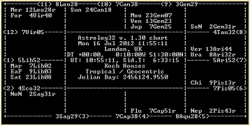
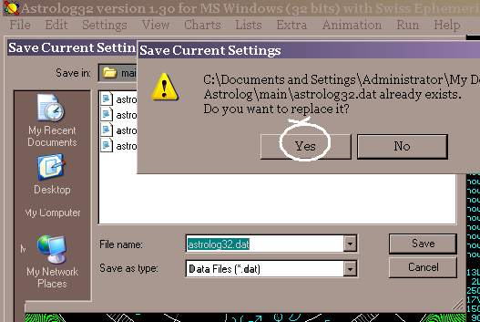

(The Companion to Astrolog32 ~ © The Dodger 2015)
all rights reserved
Astrolog32 about will usually launch without fail with an 'Here and Now' chart. It uses the 'here' you chose in the set-up if that went successfully, and the computer base-time, adjusted for time-zone as you chose in your installation dialogs, and perhaps, plus a Daylight Saving addition.
You can launch as many instances of Astrolog32 running simultaneously as your memory, (and your computer's), can handle, and it's normal to do this to compare two or more charts, as an alternative to the multiwheel mode.. with two or more instances of the program, each copy of Astrolog32 can be a different colour, or chart, or set to a different harmonic.
You'll see that Astrolog32 bucks modern trends: there's no 'Back' button, nor 'Undo'. There's no "File" - "New"; Astrolog32 makes a data-window to fill in by going [Edit] > [Edit chart data]. 'Other methods apply' for Astrolog32, where Ctrl+c, Ctrl+v, Ctrl+x do not work to copy or paste images or text (they work in the dialog boxes though): even Ctrl+s won't open a save dialog! ..
THERE ARE FIVE WAYS OF INTERFACING WITH THE PROGRAM:1. THE MENU BUTTON-BAR, { typical menubar above the program's window - edits, saves, and alters what's onscreen: many things can be altered for good here if wished }
2. KEYBOARD SWITCHES, { faster program directing-method, - edits, saves, and alters what's onscreen, mainly for current session }
3. COMMAND LINE SWITCHES, { swiftly setting up different session or printing options}
4. THE SET-UP OF DEFAULTS inastrolog32.dat , the Config. file, which create initial, but ultimately personal, permanent preferences.
5. MACROS, { to run series of actions to batch-alter the window or print-run: you have to create them, and are not an option for beginners. }
(...hey, that's a lot! - but it's just, they are available!)
--------------------- ---------------------
Astrolog32 is modular, but just the unzipped\main folder will allow you to view any contemporary charts in Astrolog's '.dat ' format, without even downloading Atlases or Ephemerides. All or some additional contents can be unzipped to 'Astrolog32''s internal folders from the internet, or indeed expanded folders can be copy/pasted into it from another person's installation. With all the Atlases incorporated, you won't need to google for a place's co-ordinates (how-to); and with additional Ephemeris files incorporated, you can chart back to 12000BCE! (how-to). In the 'V2.0x' releases, a folder of six modules with basic content is created and an uninstaller are included.'Astrolog32' is the preferred name for the containing folder, though even here you can diverge, if you edit the folder-path in all the Config.file's 'DIRECTORIES' lines, using the new name.
~ and regarding the best location for your Astrolog32, convenience may as well be your guide, as long as you have the admin privileges to browse to the folder. 'Program Files' is now 'offered', but Windows doesn't care; Windows doesn't know! ~ but if you choose 'Program Files' with versions V1.30 and before, then as that is not its expected default location 'C:', you'll have to correct the folders' paths in the Config.file to match where you've put it. See 'YOUR DEFAULT DIRECTORIES for FOLDERS' in CUSTOMIZING DEFAULTS.... If you are a beginner, stick with 'Program Files', for V2.0x versions.
Changing your settings: The default settings (colour, size, house system etc) define what you get at launch; immediately your session has begun, you can change these, on a per-session basis through the menus or switches, and the changes you make will stay for the whole of the live session: those changes you make will continue for all subsequent charts during the session - unless you un-make those changes - but the defaults will re-appear at re-launch.
However, if you save the Config.file (
astrolog32.dat ) anytime after your changes via menus or switches, you'll find many - not all - then become your new set-up, after a re-launch. (See CHANGING YOUR SET-UP, below.)--------------------- ---------------------BEFORE YOU DIVE IN: Three things you should know:
Astrolog does NOT prompt you to save any chart!
Also, all chartfiles, when saved, go by default into the
\astrolog32\charts folder, so uninstalling the program folder will mean you delete all your chart-data as well, unless you've backed up.Printing in Astrolog32 (versions up to v.1.38) contains a major pitfall for newbies, where you are using a black or dark background for the graphical chart, because what you see is what you get. Many beginners have wasted a black ink cartridge on their first print. So use the option to 'Reverse Background' before you print - simply type 'x' on the keyboard, anytime, to invert colours!
THE BASICS # 1 - Open, search, naming, data-input, Here & Now, DST, sidebar,
progressing, Chart #2, composite, multiwheel, text, Aspects, saving, pos_dats,
fixed stars, Power, linking, quitting, linking.
THE BASICS # 2 - Time-animation, printing, image-taking, Restrictions, dispositors,
aspect-lists, 'Flower', biorhythm, transits, Midpoints, sidereal & harmonics.
THE BASICS # 3 - Directory Paths, saving Settings, rising/setting, horizon, Astrograph,
interpretations, globe- & skymaps, Calendar, ephemeris, non-geo charts ,"Open with".
CHANGING YOUR SET-UP - | - THE ATLASES - | - APPEARANCE & IMAGING
JULIAN to GREGORIAN CALENDAR - | - ASTROLOG'S TIMEZONES and MANUAL INPUT
COMMAND SWITCHES & MACROS - | - CUSTOMIZING DEFAULTS via CONFIG.FILE
OPTIONS NOT COVERED - | - F.A.Q.s - | - PROGRAMS TO GO WITH ASTROLOG32
CAN'T LAUNCH A32? Find, & open main folder, double-click "astrolog32.exe". To drive the menus via the keyboard
Raising charts already in the folders
Astrolog32 customarily opens a chosen chart after you've browsed to its.dat file via [File] > [Open Main Chart], or Alt+o, or you can go [File] > [Open Chart #2], or Alt+shift+O; two different keyboard shortcuts (BTW, not zero! that's O for orange). These will load the Mainchart thread or Chart #2 thread, respectively, when you browse to a chart and click 'Open' - go shift+X to see chart #2. (For charts #3, #4, it's menu only to load them).Any charts in your
\charts folder are shown alphabetically: clicking 'View Menu' icon, then 'Details' allows you to roster the charts in another order (date; format).
Navigate to the chart you want, and go 'OK'; and chartxxx.dat appears.
It's according to the Config.file (
astrolog32.dat ) whether your default view is text, or chartwheel, and, with a new install, it's by default a chartwheel - type a 'v' to reverse to text.Where's chart #2? - see chart #2, below.
(Charts in batches can be opened serially, as a result of Astrolog32's [File] > [Search charts] operation, after a selection of charts have been filtered and listed by the search engine.)
ANOTHER WAY: where you have filenames shorter than 8 characters, these can be opened quicker by command-line: typing
-i(space)filename.dat will raisefilename.dat .--------------------- --------------------From the data it then holds in memory, Astrolog32 can make a Tropical chart, or a Sidereal chart, or a chart centred on any planet [bar Moon], or any or all of the other displayable options (like bi-wheels, tri-wheels, quadriwheels, composite wheels when chart-threads #2, #3, #4 are filled in). Allied aspectarians, harmonics, or object-data lists for any Main chart or combined chart can be called up.
More data still is instantly available: it only requires that, say, you de-restrict Fixed Stars, or add more Minors, and your changes are added at once (Go [Settings] menu for these...)
Astrolog's chartfiles are not locked, though they may be set 'Read Only'; so any
.dat can be modified, and creating new charts often means serially over-writing the current chart's data....Unless you have unzipped the Celebs' Charts into your
\charts folder, then after an first install, there's nothing in\charts , though in version 2.04 you will find John Lennon's chart.Finding a chart
If you have charts in the\charts folder, you find them by going [File] > [Open mainchart], or [File] > [Open chart 2]. If you have a text-file saved, don't use astrolog32, open Notepad, and navigate to\miscellaneous .
Astrolog32's 'Search Charts' filter.
[File] > [Search Charts] is a small but still very useful set of filters, selecting up to five definers for a search of the charts:
'Alt+s' is the keyboard switch to call this Search feature.
- a part of the filename:
- any one luminary, planet or any object, filtered by Zodiacal sign, so if you remember the Sun sign, but not the name, you can filter for that
- particular aspect between any two luminaries, planets, Node, East or West Point
- one luminary, planet or any object filtered by its House
- one luminary, planet or any object in a chosen Gauquelin sector
Note 1. there is no filter for year - unless you inserted the year in the file-name, when you saved it; then you could put it in the 'search for'...'in name' field.When the hourglass vanishes, any results appearing in the box on the right can be opened with a double-click, or otherwise, starting with the first alphabetically by clicking the 'OK' button.Note 2. If you click 'Search', with 'subfolders' ticked, but none of the filter-lines, 'Search charts' will supply all the charts in your
\charts folder, in alphabetical order.They can then be modified, and then re-saved.
You can then move on to the next, or previous, of the listed charts, if you want to, or even interrupt your search to make a new chart, and then pick up the searched returns again.To go to the next: exclusively when you have called a search up, the options [File] > [Open previous chart] (Ctrl+r) and [File] > [Open next chart] (Ctrl+n) will work to scroll through your searched charts, in sequence, to the first or last of the list that [File] > [Search charts] has provided.
NOTE: Look out for three catches:
that you must tick the tickbox to the left of each filter-line you're using;You can select a particular subfolder - click the ['..'] box, - IMO, this navigation is impossibly lengthy!. Pasting the extended path into the "Search Directory" address field is quicker - and as, in addition, I wanted the paths available from within Astrolog32 - clearly I had to hijack a [Help] text:secondly, when the query dialog box is been filled in, you must click 'Search', not 'OK';
thirdly, you may need to tick the tickbox for 'Search subfolders'.
DODGE No. 1
Here, I've chosen theReadme.html that is in\main , and normally opens from [Help]. After unticking the 'read only' attribute in its file properties, I opened it in Notepad, and added there the paths to various\charts subfolders., inserting them after the final 'DISCLAIMER' paragraph.
Put a <, then a p, then another >, at the start of each line. Remember to pick 'All files', when saving Readme.html from Notepad - or .txt will be added as a new suffix!
Readme.html opens in your browser, and in that window, you only need to highlight and copy a path from the Readme file, and paste it into the 'Search Directory' address field, and proceed as normal.Another route, you could insert the paths at the start of
Readme.txt , but it's a bigger file for your pc memory to host.

In Astrolog32, there are file-names saved within the file-content, and file-names that you save with, into the
\charts folder; often the two are the same, but they don't have to be, and they can serve different functions.Any searches for any part of a name which you typed only in the 'Edit' dialog Name-field will be found in an Astrolog32 Search. It's the opposite with Windows "Search For Files and Folders", - such data is within the file, and Windows will not search within
.dat files as if they were text; with Windows, only the [File] > [Save Mainchart data] names, that is the saving filenames which will be searched for and found.Let's call these two the 'saving' name and the 'covert' name.
For this reason, the name which you save a chart by (as opposed to the covert 'Name' field in the 'Edit' dialog), should be the one which holds any key information for a Windows search, and, to be easily served up by Astrolog's [File] > [Open Main Chart]: e.g.
Doe,John_1865_family,horse doctor,Ohio,unrect.dat
Astrolog32's [File] > [Search Charts..] module only inspects the 'covert' names; as, after rummaging through\charts folder, Astrolog32 can only present charts in alphabetic order, showing only a little of the name, then putting surnames first, may help you find people quickly; putting dates first means you may find dates of chart-erection, or particular events, quickly.
Entering data
[Edit] > [Edit Main chart data ..] is the menu-route to creating a new chart, modifying the 'Here-and-Now' chart seen at your launch; or else, it's the route to re-opening a chart, in order to amend or rectify it: after the ten fields are filled in as you require, and 'OK' is clicked, this will be the datum that Astrolog retains, to show, to save, or create all the other viewable options for your new Mainchart.
The keyboard shortcut to edit the current chart, or create a new chart, is Alt+z.You only need to type the first three letters of the month in the first field, and after that 'tab' key carries you through the fields in order. At 'Time', 'Daylight Saving' and 'TimeZone', the down arrow-key spins through the options; or you can put the last three fields in manually - it's maybe quicker.
After selecting the timezone, click 'Call Atlas' for giving Astrolog32 the location, (about, see THE ATLASES); then, location and co-ordinates are automatically filled in, (though you can insert them manually).
Click OK!
This new 'Main Chart' you see is on chart-thread #1, - this is the principal working chart-thread, seen, and doing the bulk of the work where there's no call for accompanying charts in Relationship Mode, and as well, the only one that can be copied or saved.
When you fill [Edit Mainchart Data] again, and 'OK' new input, then the first Mainchart data will be dumped; whatever data-fields you don't change will carry over - so, unless you are careful, data from the previous chart you may find unmodified, in the new chart!!
And all the other chart-threads are editted similarly, - by overwriting the data through their respective editting dialog box.In your charts, the time, timezone and global co-ordinates don't even have to correspond for a chart to appear - Astrolog doesn't know better than you! The sinking Titanic was timed in GMT, and as long as the given time and timezone match, that secures the instant in time - the location (mid-Atlantic in that case) is meanwhile derived from the co-ordinates.
For a breakdown of the TimeZones available in the drop-down, and of the way you can insert a manual or preset correction from your local time, seek out PART # 8.
For BCE, put a minus before the year.
Here & Now, DST, sidebar, progressing
The 'Here & Now' chart
'Here and Now' chart can be called up at any time simply with an 'n' (without inverted commas) at the keyboard, or alternatively use the [Charts] > [Here and Now] link, or the [Edit] > [Enter/Edit mainchart..] dialog box link... handy, so long as your pc's time and date are correct. 'Here & Now' is automatically loaded to all chart-threads (Mainchart, #2, #3, and #4), at launch, and remain unless or until you edit them individually.
'Here & Now' clears all fields to default including the DST field but excepting the Name field (this remains unaltered).
Adding DST as an on-going default
If your clock-time advances during summertime, you could consider it worthwhile to change Astrolog32 to be one hour ahead, as the clocks do. If the charts you make are usually close to the present date as well as confined to your DST zone, as in Europe, - then toggle the little 'Summertime' switch you'll find in [Edit] > [Set Default Location, Timezone..] (Alt+shift+D opens the same dialog; ~ the 'down' arrow does this; then go [File] > [Save current settings].
DST will then be applied to all charts after you re-launch, and in the [Edit] > [Edit chart #x] Summer Time field, it will show 'Yes', and Astrolog sets the charts for an hour earlier than your time-datum.On the down-side, you will notice there's scarcely a change visible in the sidebar - it says 'DT' instead of 'ST' (standard time) - and you need to be sharp on the look-out for a possibly-wrong time setting when erecting a non-DST chart, so as to pick up on any mismatch between what you see and what you intend.
DODGE No. 2
If you make worldwide charts as well as domestic and 'Here & Now's, you could deploy two Astrolog32 installations, one for current events during your DST summer, but the other permanently at your standard time, (I've suggested this, for other reasons, elsewhere in the Companion); my two versions have to look quite different, so I know which Astrolog version I'm in.To do this yourself, see the very last article in this guide.
Hiding the planetary positions sidebar
[View] > [Show chart info] (little t, a toggle) has various effects: it hides the sidebar, while hiding the chart-data subscript at the bottom of the wheel. It calls graphics mode, if you're in text mode. And it makes the chart oblong!
as does [View] > [Show info sidebar], Alt+t..
Alt+t is the Hide-Info-Sidebar-&-Show-Data-Subscript toggle, or [View] > [Show info sidebar].
Progressing the wheel
[Charts] > [Progressed (Single Wheel)] opens a dialog box so that you can put in the time-data to progress to; then Astrolog will re-make the Mainchart so that the planets, houses and points are progressed according to the formula chosen in the dialog box, (Primary, Secondary, Solar Arc..) This feature does not overwrite charts #2, #3, #4. Note: there is a little tickbox top left ('Do Progression') in the 'Progressions' dialog box, - this must be ticked.
Getting out of your progressed chart to the Radical again: open the 'Progressions' dialog box again - where you'll see the data you entered is still resident - uncheck the 'Do Progression' tickbox and 'OK' it.
If you open a new Mainchart, it too will be progressed to the same point in time, unless you kill the progression, by going [Charts] > [Progressed (single wheel)], or Alt+shift+P, and un-ticking the 'Do Progression' box.
Progression via [Progressed (Single Wheel)] will prevent any further progression using 'p' switch.
---------------------An alternative way: Secondary Progression is simply achieved by using [Animation] > [Animate], or the shortcut, the key 'p' (without the quotes), which also sets off forward progression by days until 'p' is pressed again. Letter 'r' puts this progression in reverse until 'r' is pressed again, so these shortcuts, p and r, are toggles.
To do this, though, it is first necessary to reckon days/hours from the start-date, and count each step.Steps of time depend on the [Animation] > [Jump Factor], which you can alter through the menu, (or by switch; see the TABLES OF KEYBOARD SWITCHES for details), even while progression is running. These progressions will not be dumped in dual- or in multicharts.
NOTE: Progression works just as well in all text mode charts, and in Local Horizon, maps and Dispositor pages as well. For all branches of astrology, this makes scanning for an exact time easy.
Chart #2, composite, multiwheel, text
Getting to Chart #2Loading or entering data for Chart #2 uses similar dialog procedures as the Mainchart, - switch is Alt+shift+O: after 'OK'ing your data, Chart #2 is created and lurks in the background - Chart #1 is still visible, and Chart #2 will only appear by selecting the bi- (Alt+c), or Multi-wheel, or by taking the following option:
Chart #2 can be viewed or copied or printed just by itself by making it the Main chart; transfer it by going [Edit] > [Exchange main chart and #2], and then handle it the same as the Mainchart, as described above. Quicker, go 'Shift+X' to swap them. This is a toggle.If Chart #1 is in, say, Aspectarian mode (or Calendar, Parallel aspects, or other), then Chart #2, (and charts #3, and #4) are also in that mode ~ which may be either a boon, or a disappointment!
Composite Wheel
Using this option, which is in [Charts], sets the window to showing the midpoints of positions taken from two time-data, presented as a single chart. The two time-data are whatever are entered at Chart #1, & Chart #2: so given that you have a mainchart loaded, enter the other data into [Edit] > [Edit chart #2], and 'OK' it, (it won't appear), but then this choice (the shortcut is 'Alt+shift+Y') will create and show virtual planets and points, at the midpoints for each planets' (or objects') pair of positions across chart #1 and chart #2.'Alt+shift+Y' is not a toggle. Keyboard letter 'c' (without quote marks), leaves you with the Mainchart again.
Multiwheels
[Charts] > [Two Wheels], and Three Wheels, and Four Wheels maximum ~ with this choice, you can pool two charts or more, concentrically in a single ring.Load data to each chart-thread you want other than Mainchart, using [File] > [Open Chart #x], or [Edit] > [Enter/Edit Chart #x data].To avoid more work later, IMO it generally pays to create and save charts individually (in a 'temp' folder in
When they're loaded, then to view them, go [Charts] > [Two Wheels], [Three Wheels], or [Four Wheels].NOTE: This sets Astrolog32 mode to [Charts] > [Relationship Mode ON]. Switching it off (little 'c'), will hide charts #2, #3 and #4.
\Charts ), before incorporating in the Multiwheel - my reason for this is:
Charts created via [Edit] > [Edit chart....#3, #4 ] to make up a Multi-wheel cannot then be resolved apart for saving individually, and the multiwheel, which can be saved as a Multiwheel .pos_dat file, strips out the time data from each chart; which leaves you with taking an image-copy as a record. If you save as a text-file, only chart #2 is registered.
In a bi-wheel, the Main chart appears as an inner ring, within #2 chart: curiously, in text mode, the data for chart #2 appears, but not of the Main chart - this is the only way I know of getting quickly to the chart #2 text-data in isolation.
-------------------------------------------In fact, you can only save, or see in isolation, the Charts nos.#1 and #2 (and that's by swapping them via [Edit] > [Exchange mainchart and #2] - a recent, very useful adaptation). Charts #3 and #4 can only be viewed in the Multiwheel already containing positions of charts #1 and #2!
If you want to compare more than two charts, but want more control and less fuss, the difficulties mentioned with Multiwheel are an argument, maybe, for launching more instances of the program, and either using Alt+tab to view them alternately, or tile them.
Sometimes the multiwheel can just be fazed, and drop a chart.
Getting out of the Composite Chartwheel or a Bi- or Multiwheel.
[Charts] > [Relationship Mode OFF] hides all the charts apart from the Mainchart - a very necessary switch to terminate the following:
Relationship Mode OFF is also called by 'c' (without inverted commas) at the keyboard: these aren't toggles.
- Date Difference text-page
- Multiwheels
- Composite
- Synastry
- Midpoint, or
- 'Progressed & Natal' chart and text offerings;
Entering/Exitting text mode

This is an essential switch for your toolkit. This alteration is most simply done by typing ' v', (without inverted commas), at the keyboard. This 'v' is a toggle, and will switch you out of whatever graphical window you have, to a version as text, or, out of some of the text mode pages back to the nearest graphical option - map, aspectarian or chart. If ' v' doesn't go all the way, then go Alt+shift+V, then ' v' again, should get you to the chart.With Ctrl+2, Ctrl+3, Ctrl+4, you can increase the font size to readable.Astrolog32 provides text alternatives for most visual windows, and generally more data by way of text pages than graphically: the wholly-text pages are hard to tell apart, as their chartnames, if in lower-case, don't stand out!
The menu-option [Charts] > [House wheel/Rectangular] creates, in text mode, the text-grid seen in the illustration above.Features of text-mode:
- Much more extensive lists of calculations are available in text view.
- Different lists of data can be retrieved, appended each to another and viewed or printed off in a single run, by using command switches (which can be copy-pasted from the COMMAND SWITCHES & OBSCURE daughter-page of this guide, into the command-line; see an example in the COMMAND SWITCHES & MACROS part).
- Page Up & Page Down are the best way of reviewing lists.
Raising select information by Command-line.
EXAMPLE: To print off an ephemeris, set the following
[View] >[text-mode]
[View] > [monochrome]
[View] > set background to white, text black,
[View] > [Print nearest second], if you want high accuracy
[Settings] > select the planets/points you want.[Run] > [Open command line], & enter one (or more) of the following commandsSimilar short commands will raise and dispatch charts in a swift fashion. See COMMAND SWITCHES & MACROS, and the Switches page.Additionally add, after a letter-space
-E , for current month-Ey , for current year-Ey n , where n is the year/ span of years you want-qy n , for year n, year starting on Jan. first-qm m n , for year n, year starting on month mGo 'OK'. When you have the lists you want, press the Return key again.
-sr , data in Right Ascension, rather than ecliptic longitude-gp , data in equatorial declination, in the grid of aspects-ap , data in equatorial declination, in the grid of parallel aspectsType '
> YourChosenName.txt ' in the command line.., and go 'OK', or press the Return key again.The file will be created and sent to your
\main folder; found and opened in Wordpad, it can be editted to ensure the font is small enough for each day's data will print all on one line, then printed.
Aspects, saving, pos_dats, fixed stars
Aspects, & the AspectarianAspects are listed in text-mode, for any chart; go [Lists] > [Aspects]. The aspects are listed by closeness of aspect to exact, or applying/separating. Go Ctrl+x for 'power' according to Astrolog's algorithm.The aspectarians, both text and graphical, update if you press little 'p'. It shifts according to the jump rate & jump factor as set in [Animation].
Ctrl+x is a toggle.
If you want more, or less, aspects calculated and shown, then tick, or un-tick, objects or points in [Settings] > [Object Selections].Otherwise, the Aspects & Midpoints Grid, as Astrolog32 calls it, is, like the chartwheel, thrown up as a graphical image or a text-file - shortcut, go shift+A. Where the object a's row and the object b's column intersect, the aspect-glyph mark the aspect: - these glyphs occupy the left and lower part of the grid.
In the upper-right area, the sign of the nearer midpoint between each pair is shown; ~ the text version gives those midpoints in degrees & minutes. At font size 3 and above, the graphical also shows these midpoints in degrees.
If it's a bi-wheel aspectarian, then the Mainchart's objects and Points are listed on the vertical axis, chart #2's are on the horizontal. Only the aspects between one chart's objects, & the other's, are shown.
Going [Edit] > [Copy chart as text] sends the grid to the clipboard, to paste into a document, or it may be sent straight to printer, with usual caveats regarding Character Scale. (see 'Preparing to Print' below). Switch is Ctrl+shift+5.
[Edit] > [Copy chart as bitmap] sends an image of the Aspectarian to the clipboard, to paste up. Switch is Ctrl+shift+6.
[File] > [Save chart as bitmap..] will send an image of the Aspectarian to the\astrolog32\miscellaneous folder; going 'All files' instead of 'Windows Bitmap', and changing the suffix, permits saving as a.gif or other. Switch is Ctrl+6.-------------------------------------------
If you want more objects or points shown (e.g. Uranian planets), you must expand the grid to accomodate them, in the dialog box raised via [Settings] > [Miscellaneous Settings] 'Expand no. of cells in Aspect Grid', as well as ticking more objects in [Settings] > [Object Selections].
-------------------------------------------
Aspect GlyphsIt's according to the aspects chosen in [Settings] > [Aspect Selections, Settings] , whether you see more or fewer aspect-glyphs on the grid (for a guide to them, see right).
For this dialog, the keyboard toggle-switch is Alt+shift+A, where the tickboxes will switch them on.
Saving
Opening [File] > [Save Main Chart data] is the menu-path to saving the Main chart as a.dat file (the keyboard switch Ctrl+w opens the same dialog window). These are Astrolog's native format for saving, chart-manipulation and view.
- The
.dat files Astrolog32 uses are small, - 240 on one Mb on your disk - & only Astrolog can open them as a chart, although Notepad can open them, revealing the time/place data, of course without the chartwheel.And, as long as the file starts with
@0102 and is in other respects in the unique layout illustrated below, Astrolog will open it as a chart even were you to save it with the suffix.txt ; and other file suffixes will be accepted, if they're other text-file formats, as long as you remember to pick 'All files' for Astrolog to browse them, when opening a folder view..On the other hand, it's [File] > [Save chart as Textfile] & [Save chart as Bitmap] to save it as
.txt or in image media formats, using the appropriate program (Notepad, Paint) to retrieve and open them subsequently.
- With a Save chart as text save, the
@0102 stuff is absent: it's a list of positions as text, saved to\miscellaneous by default.. you can publish the object-positions in Word, Wordpad, or Notepad - (but not Astrolog!). (BTW, this save will bounce Astrolog into text-mode).
An advantage of this data-only format is, that the text's contents are searchable via Windows Search.
- An image-save is tidier than a screenshot, (see below: APPEARANCE & IMAGING/# IMAGING in graphical mode); but, even as a
.PNG , a chart will take 30kb, and probably more unless you shrink the Astrolog window using the window pullhandle, or create a monochrome.GIF only.----------------- -------------------DAT FILES: Astrolog32's chart-creating files (the.dat files), made when you go [File] > [Save Main Chart data], will save to the\charts folder by default. The program's software is designed around translating letters into charts, so these.dat files are just text-files that drive chart-creation in Astrolog32.
Here's an example from\Celebs , as seen in Notepad (panel to right).
This is an older (Astrolog 5.40) chartfileUnder Astrolog32, there is another line put in, a prompt for if you edit your charts in Notepad, to use American format dates:
@0102 tells the program it's a valid chart.
third line is an advice line, as it follows a ";".
fifth and sixth lines have the data: here, ST is standard time, DT adds an hour.
After/zi, "internal name-data" "placename" follow.
No matter what you restrict from view, when viewing, saving or printing, any.dat file you save will not forever reflect these restrictions: if you raise the chart again, wanting to see it with more stars, or other objects, or re-oriented, all these optional tweaks are still available because the program always recalculates from the simple time datum you saved, over again & according to whatever the program settings are currently.
----------------- -------------------Getting to other targetted folders: With [File] > [Save chart as Textfile..] or Ctrl+5, and [File] > [Save chart as Bitmap..] or Ctrl+6, both open a dialog box with the default destination
..\Astrolog32\miscellaneous . Saving either text or graphics in this way will mean you have to have a way to get to the\miscellaneous folder, in order to raise them - this may a problem if you can't access the Astrolog folder because it's in a system folder.
----------------- -------------------Naming & saving are a double opportunity to bundle information connected with the chart: first, giving the 'covert' name: you can save 255 characters/spaces in the name Astrolog32 shows in the Name field - any more, and you will see, on reopening, a error notice 'Passed out of range switch "/zi" ', or 'the command info file is not in any valid format (character 255) ', or 'Value 0 passed to switch /M out of range. ', (or, the files may end up broken!)Secondly, you can save more data by choosing to type in different info, when it comes to saving into the
\charts folder. Windows has a different allowance - it will allow 140 characters maximum - but it depends on the length of the full address path to your\charts folder whether it displays correctly: if it's as long as the path to\My Documents , the names may be foreshortened, like thisSHORTE~1.DAT. .(See Choosing good filenames, above, for my conjectures on what a saved-name might usefully include..).
DODGE No. 3.If you want to bundle a lot of text with a chart you have already made, a quick way is to go [Open] > [Open Mainchart] and locate the chart; right-click on it and force Windows to open it in Notepad, (or Word if pictures are to be incorporated): then proceed to open the chart normally, (this for safety's sake.)
Now delete the text-version's contents, and paste in your gathered-up data and pictures, saving with the same name, but as .txt or .doc., in the same folder.
Handy, so long as you can get to your\charts folder to open and read it.
While another native file-format, (
_pos.dats ), copes with derived charts, a.dat should be used for charts that have the Sun or planet other than Earth at its centre; though they will save as Earth-charts,.dats can be reset to another central planet;_pos.dats cannot be reset.
Xxxx.nat ", and the program opens it without problem, though its [Open Charts] dialog box looks preferentially for.dat files. This does mean that you can have a second invisible cohort of files in a given folder.
In fact, I've tried ".old " and ".hat ", found them by choosing Files-of-Type: 'All Files', and opened them no problem!Astrolog signals any error in the naming by refusing to save, and not displaying other charts in the destination folder: Windows baulks at odd characters in the filename, which may be there even if you can't see them: as, for instance, if you paste in a name from a .doc or .rtf, which may include hidden formatting instructions (even line-breaks!).
Problems arise with/ \ : * ? ! " < > .----------------- -------------------Broken FilesYou may find a
.dat file which won't open; I mean those which show up as files which can't be deleted, nor can they be modified even in Notepad.
For these, you must highlight all files in the relevant folder, then de-select the broken file concerned; now cut the rest and put them all elsewhere. Now delete the folder.Best tip ever: Make a link to your Charts folder! - put a shortcut in the Start Menu, so you can manage your folders, as you go.
Following on.... the '
_pos.dat '.[File] > [Save Chart Positions] sets up the save as a_pos.dat , which, like.dats , save by default to the\charts folder.
This is Astrolog's other format, for saving charts that are less simple, viz:
- A composite chart
- An harmonic chart
- A multichart
- A progressed chart
- A midpoint chart
- A Kensky flipped chart
- .. and others
When accessed, these lists declare no time. In text-view, they detail the positions of every planet, Luminary and Point that is normally listed in the info sidebar, but not what kind of derived chart it actually is!
Also, the charts are not itemised: this is a bother, then, as you must stipulate, in the file-name, all the source-data, and the tweak(s) that made you choose_pos.dats as a solution, e.g:COMPOSITE_Felix(prog.)&Ludmila(prog.)_pos.dat .Re-opened in Astrolog32,
_pos.dats that host multiwheels must be reset to the appropriate number of charts, (i.e. Relationship Mode ON), to see the full multiwheel, so be sure to indicate in the file-name the number of charts incorporated, for example:
4CHARTS-Sonia-William-Jasmine-Leo_pos.dat .
.dat chart, (including progression), but_pos.dats will not re-set with any planet at the centre other than Earth.It's your choice whether to save as a
.dat or a_pos.dat , but simply inserting_pos in the name of an ordinary.dat save will not work.The keyboard switch to save in this way is Alt+shift+W.
Fixed Stars
There are two modes for stars now, either:
- The Default: what Stars you get when going [Settings] > [Include Fixed Stars.. ] (or shift+U - a toggle) depends now on which, of them all, are actually aspecting planets at the time-datum; also, by default, Fixed Stars are always 'off', and so must first be toggled 'on'; (this option for viewing leaves [Star Selections], and Alt+shift+R which opens this selection popup, redundant).
- Old-Style, or Alternative: it used to be that a personal selection could be made at the start of each session, but just switching Fixed Stars 'on' meant, if 'all' were selected, the whole roster of available stars used to appear in your chart, and it was a messy sight; on the other hand, if [Settings] > [Star Selections] were all 'off' when you clicked [Settings] > [Include Fixed Stars.. ] (or, go shift+U), then this feature seemed not to work.
Now, it's: [Settings] > [Star Selections] (Alt+shift+R) first, - select - and then the stars appear without more ado (this makes [Settings] > [Include Fixed Stars..] redundant.)
The latter option, which lets you keep track of your particular malefics or benefics, has quite a set-up then at the start of each session, - sadly a macro can't accomplish it, and the Config.file has no entry for it.
This has driven me to consider keepng my pc on standby, 24-7, so as not to re-make Star Selections.-------------------------------------------The change back to the old-style delivery of Fixed Stars, from the modern-style, is available via the menus, the first checkbox in [Settings] > [Chart Settings] needs to be unchecked and 'OK'ed, then, to make it permanent, the Config.file (
astrolog32.dat ) must be saved [File] > [Save current settings..], & save the text-file calledastrolog32.dat .Or, the Config.file itself should be opened, altered and saved (e.g.see left); find the line starting
=YU ; and, at the start, delete '= ', and put an underscore instead. Save, and close.
To switch Astrolog32 quickly into the display of Fixed Stars as a matter of course is only practically possible if "Alternative Stars" is OFF.
Power, linking, quitting, linking
Powers - The Reckoning of relative InfluenceA prime concern of Walter Pullen, Astrolog's deviser, was to make possible different models for grading the power of different objects and different aspects.
To do this, users of Astrolog32 can apply power-numbers to each aspect, orb and object, either as in the past through amending the Config.file lines, or now, through these menus:
Higher numbers signify more power, on a scale from 0 to 50.
- [Settings] > [Minors] or (Alt+j),
- [Settings] > [Uranians], or (Alt+shift+J),
- [Settings] > [Aspect Settings], or (Alt+shift+A).
The calculations are automated, then, and shown in [Lists] > [Aspects], and inform the default interpretations. The closeness of orb is factored in.
Quitting Astrolog32
[File] > [Exit] kills Astrolog32 without any invitation to save charts.
Hitting letter q does the same thing.Linking in resources to Astrolog32
Accessible from the open program, Astrolog32 has only the Helpfile in
.txt format, and the Readme in.html format, - these two edittable files can host a users' custom data, or some of it.HTML however can chain more HTML, and so, by modifying the Readme, we can then offer links to such other webpages, online or local, that might call particular information you need onto your screen quickly. For how, see DODGE No.1 above.
Locally, examples could be: pages, maps, prompts, pictures, or tables, all of these being made, then saved in the
\main folder..
e.g. by inserting a line into the Readme's bodytext, hotlinking to your home-made html or image 'mypic.PNG '; 'mypage.html ', ..(makeReadme.html open in Notepad, and edit)..
( where, here, I've shown the Astrolog32 folder at the C: root.. yours may be, - I would even say should be, - in Program Files)Online, for linking to a website, it could be like:
Living with a hyperactive keyboard!Astrolog being, from its beginning, a keyboard-driven program means accidental key-strokes in an Astrolog32 session can really spoil your day! - the 'Esc' key is the worst, as it closes the program without even a 'by-your-leave'.
Followed closely by 's' - Suddenly in Sidereal!
Old School users will be used to such brinkmanship in an end-user program - newbies had best be ready for the unexpected by working to save promptly any unsaved charts.It may help to have an steeply-raked keyboard.<<<< >>>>
PART # 2
- THE BASICS # 2 - Time-animation, printing, image-taking
Animation of the chartsOne of Astrolog32's greatest features has been its ability to advance and regress charts in different steps; simply pressing 'p', will show the default advance, - every second, it will advance the chart-datum one day; every time you hit 'r' , it reverses; and when you hit 'p' again, animation stops.At [Animation] > [Jump Rate], each hop can be set from a second, to a minute, an hour, a day, a week, a year, a century+.A $-sign returns to shifts by day-interval.At [Animation] > [Jump factor], any Jumprate you choose can be multiplied.
Shortcuts to all these jumprate options can be found in the page TABLES of ALL KEYBOARD SWITCHES.
This animation feature works not just with charts, but in horizons and map views, ephemerides, lists and the calendar, and continues to shift the chart through time even when Astrolog is the inactive window.
As animation progresses or regresses the chart, the data-fields in the [Edit] > [Edit Mainchart Data] dialog-box update accordingly, - they do not remain at your starting point.
Preparing to Print text
[File] > [Print...] (the keyboard switch is Ctrl+p), opens the 'printer' or 'choose printer' dialog box to print directly: where the chart is a text, it will print using Notepad's defaults; Astrolog32 has its own Postscript setup, that can be managed in the [Settings] > [Miscellaneous] dialog box.Prior to printing, the Character scale will affect the font-size - 'Ctrl+2' is default, and 'Ctrl+1', ... 'Ctrl+3', and 'Ctrl+4' are other switches for glyph-size that can be set, no matter whether in Graphical- or Text-mode.
Alternatively, [Edit] > [Copy chart as text] sends a text-version to your clipboard, so you can paste and format in an editor.
There's no need to reverse background when printing text, white-on-black text onscreen will print black-on-white, anyway.
Paste-up from Astrolog32
[Edit] > [Copy chart as text]: this sends a printout of the chart-data, (whether you're looking at the graphical or text version, or a bi-wheel, or some derived data), to the Windows Clipboard as plain text - (this will bounce the chart-view into text-mode anyway).
This clipboard item can be pasted into Wordpad or other editor. This route also allows you to copy textlists, like Interpretations, or Aspects, and format them into MS Word, or a publishing software of your choice.
The shortcut is Ctrl+shift+5.[Edit] > [Copy chart as bitmap]: this makes a copy of the chart image, Aspects & Midpoints image, Map view, or Dispositor image (& if you are in text-view, it will bounce you into graphical mode), available in the Windows Clipboard, which can be pasted into any image-editor that will host bitmaps: you can then save in any format.
The shortcut is Ctrl+shift+6.But compare [File] > [Save chart as bitmap], where, by opting for 'All Files' in the File of Type field, you can save in non-bitmap file formats straightaway.
The shortcut is Ctrl+6.
Restrictions, dispositors, aspect-lists
Restricting or expanding what you see, and printMore Information in the chart: If you want more accurate positions of objects and points, as a permanent feature, go Alt+b, then [File] > [Save current settings], and OK. Or, in the Config.file, set-b0 to=b0 , and save.
You can also set the objects' positions to an Offset to Sidereal Time, in hours and minutes. That's in [Settings] > [Chart Settings..], on the right of the dialog, together with Scientific Notation of degrees in decimal.Altering date format: date format, D-M-Y (Europe/Commonwealth) or M-D-Y (US/Can), find this choice in [Settings] > [Miscellaneous Settings]; then [File] > [Save current settings], and OK.
Hiding the program!: There's a way to hide everything leaving a plain empty window: hitting the 'Backspace' key does this, and [View] > [Window Settings] > [Clear screen] does too. Pressing 'Spacebar' calls Astrolog back again, which can also be driven by its menu equivalent [View] > [Window Settings] > [Redraw screen] - this last tweak eliminates any on-chart marks, accidental or otherwise.
Hiding planets/ other objects: going [View] > [Show glyph labels] (toggle little l - l for 'light') will hide/show all planets, luminaries and calculated points, like the nodes; this is how the chart will print. It will call the graphic-mode, if you're at a text window.
[View] > [Show border] (b is the toggle): this hides, or shows, the border around the chart - you can't make this a default feature, except by altering
astrolog32.dat , making the colour parameters the same for lines and background.[View] > [Colored Text]: Colored Text bounces you into text mode, and with colour applied to object names - you can't make this a default feature.
Other Aspects: Going [Settings] > [Parallel Aspects] (toggle is Alt+shift+X) hides the general aspects and shows instead the parallels and contra-parallels, for view, list-view, calculations and printing - you can't make this a default feature.
For a different range of aspects from the defaults to be listed or viewable, un-tick the standard aspects in [Settings] > [Aspect Selections & Settings..], and select others to choice - (alt+shift+A also calls this). (See BASICS # 1 > Aspects & the Aspectarian to identify the aspects available, and the symbols used.)
This is an instance where, if it is a regular need, a macro would serve better.
More/Less Objects, More/Less Points: You can set up Astrolog32 to display 117 objects & points, including cusps and divisions; 127 if you include Arabic Parts in the available text list. By default, only some 24 objects are shown, or listed in text-mode, from a given chart-datum.
You can include or exclude objects or points on a per-session basis, according to the nature of your work, by using the dialog boxes itemised below: otherwise, you can make more objects, like cusps, minor planets, etc, (but not Fixed Stars), calculated for your default text-view or graphics-view, by saving the Config.file (
astrolog32.dat ) after you have incorporated or restricted what you want.In [Settings], each link ending in "...Selections" in the [Settings] dropdown will open a dialog to expand Astrolog32 in one of many directions - (though, with familiarity, adepts at Astrolog32 may restrict individual features ad-hoc with either command switches or keyboard switches).
1. By way of [Settings] > [Object Selections], all major and minor planets, also Uranians, and the cusps, can individually be restricted from view and calculations. (the keyboard switch for this tickbox window is Alt+little r).
These choices can be saved as permanent settings.2. By way of [Settings] > [Transit Selections], all major and minor planets, also Uranians, and the cusps, can individually be restricted from view and calculations when transitting. (the keyboard switch for this tickbox window is Alt+shift+F).
These choices can be saved as permanent settings.3. By way of [Settings] > [Progressed Selections], all major and minor planets, also Uranians, and the cusps, can individually be restricted from view and calculations, when progression dialog box is used. (the keyboard switch for this tickbox window is Alt+Ctrl+p).
These choices can be saved as permanent settings.4. [Settings] > [Chart Settings], (Alt+shift+C) is a portmanteau dialog box where Alternative stars can be restricted,
so that the new-style view of those-currently-aspecting is shown as default. A tick in the box will reverse this.
Or vice-versa, to make Alternative Stars default.Also, here are various different ways of rendering text-lists.
Here too you can add the dispositors' glyphs to the signs in the wheel. This is a cabinet of assorted fixes, and includes how 'Flower' graphics are displayed.
5. [Settings] > [Miscellaneous] dialog, (Alt+shift+capital B), offers a place to add cells to the graphics-mode aspectarian grid, to accomodate more points or objects.
At the same dialog box, restrictions or de-restrictions can be applied to the chart-angles appearing too. Rising, Setting, at M.C, at I.C, are not generally in the chart info; they are Off by default anyway.Also, you can reset what interpretations you want to see, or chose 'None'. - and tackle Postscript paper settings, hour & date formats, restrictions on crossing of Angles, and the number of lines-width of the parts of the charts.
Some of these choices can be saved as permanent settings.
6. [Settings] > [Arabic parts Settings] is a dialog where you can define different calculation formulae and inversions, and the circumstances where Astrolog32 will list any Part's aspects. There's no shortcut.
7. [Settings] > [Calculation Settings], (Alt+shift+S) - as well as Sidereal settings, heliocentric, or any planet-at-centre (except Moon), charts can be opted here, and/or harmonic charts derived from the core chart data. The settings for Lilith calculations have two options; planets can be set 'on a chart's Ascendant', or at Midheaven.
8. [Settings] > [Object Selections], (Alt+r) - to choose which, of all possible objects, are to be calculated in your charts.
To know more about what the Uranians are, open and readseorbel.txt , which is in\main .9. [Settings] > [Transit Object Selections], (Alt+shift+F)- to choose which are to be calculated in transit bi-wheels
10. [Settings] > [Progress Selections], (Alt+Ctrl+p) - to choose which objects are to be calculated in any progressed bi-wheel.
11. [Settings] > [Planets & Minors Settings]: exists to set down the scope of the Main & Minor planets, and the Points used, regarding their orb and influence.
See that Orbs are 360 degrees, and under "Add" and "Influence", "0.0" here indicates that the objects have not been weighed for more orb, nor power - those numbers can be upped to your choice, such as extra orb for the Sun.
To make your selections permanent, now go [File] > [Save current settings]. Save, overwritingastrolog32.dat. 12. [Settings] > [Graphics Settings] - You can alter your standard animation delay (in milliseconds) here. Otherwise, see APPEARANCE & IMAGING for this dialog's other tweaks.
Sundry other tweaks:
[Lists] > [Arabic parts] tells the program to serve the Arabic parts text-list. Alt+p is the shortcut. You can't make this a default feature. It is a tenacious page, sometimes won't quit..
[View] > [Sort aspects by power/orb] (Ctrl+x is the toggle) re-sorts the aspects list (see [Lists] > [aspects], Alt+l), accordingly.
[View] > [Show Aspect Info], (shift+I, a toggle), shows or hides a power calculation derived from the aspects in the chart. It is not a link to the Aspectarian. This only affects the graphic view. If you're in text-mode, this will flip Astrolog32 into graphics-mode, with the calculation added.
Using the [Extra] sky maps and world maps, switching into [Bonus] mode (little i), transforms the rather humdrum-looking maps, (when CONSTELLATIONS are ON (shift+F)), into a planetarium! You can't make this a default feature.
Contra-parallels appear as a hash glyph.
Dispositors
The Mainchart's dispositors can be seen - in various hierarchies - by typing a capital J (not a toggle), or clicking [Charts] > [Dispositors]. If in Graphics mode, it'll be a colour grid, if you're in Text mode, a grid laid out in text.
As usual, to switch between them, use little 'v', (without inverted commas), and capital V to return to the chart to which the grid applies.Even in Dispositor mode, pressing 'p' sets off progression, forwards or backwards.
Also, dispositors, both text and graphical, vary according to the harmonic chosen.
Aspects in the Mainchart or Bi-wheel (list form)
[Lists] > [Aspects] offers a text-list of all the aspects which are 'on' for view, for a particular chart, (whether a bi-wheel, or just the Main-chart). By de-restricting hidden aspects, you can see all aspects.
NOTE: If it's a bi-wheel, this option only presents you with a text-list of all aspects between the two, and excluding the two individual charts' internal aspects.Alt+l (letter 'ell') is the switch for this, (it's not a toggle), and Alt+k renders the list in colour, which may help for picking out a particular object. This list, once called, becomes the replacement text screen to 'Chart positions', when you switch into text mode from the wheel again: Odd.
Alt+shift+X is the keyboard switch for parallels and contra-parallels, aspects for which a tight orb of 1 degree is typically used.
Alt+shift+X is a toggle.Another way of viewing aspects is the switch: Shift+A, which calls the aspectarian grid.
'Flower', biorhythm, transits
The "Flower Graphic"Springing from an idea from Theodoros Natsinas.
Getting away from aspect-display, this chart is an analytic of significant degrees, expressed in the chart circle as a petal-shape, radial from the centre, toward degrees that are 'trigger points', i.e. sympathetic/antipathetic to the planets' positions as an whole; waves or spikes at the circumference, for a compound evaluation of significant degrees.[Settings] > [Chart Settings], (Alt+shift+C) is the only keyboard way of opting for this graphic.
Biorhythm Data
[Charts] > [Biorhythm Chart], (shift+Y), sets up a sine-wave chart showing three varying qualities at a glance; these are reckoned for the chart no.2 birth-datum - Intellectual, Emotional and Physical, - on the Mainchart's day. The waves' low point may reach -100% (low ebb), .. +100% (happy and full of energy).
The graphical shows month to view, the text version gives the biorhythm percentages for the seven days before (T-7 days) and the seven days after (T+7 days) the date in question, so one can see if the cycles are rising or falling.
(BTW, it takes over 58 years for all three cycles together to synchronize and repeat themselves.)The command-line switch is
-rb (dgg.txt), and this command-line switch:
-r0 <file1 > <file2 > :
will keep the charts separate in comparison. There is a distinction between any of the above types of particular relationship charts and the actual comparison between two separate charts.
The-r0 option is used to generate actual comparison charts. For example, combining-r0 with the-g switch will cause a full grid chart of the aspects between all the planets of the two charts (with person1's planets on the vertical axis and person2's on the horizontal) to be displayed.Transits to the Mainchart
[Lists] > [Transits] opens the 'Transits' dialog box so you can input the point in time for those transits to the Mainchart which you want to see. This option then presents you with a text-list of all aspects between the two, and excluding the two individual charts' internal aspects.
Keyboard switch is Alt+shift+T.
Midpoints, sidereal & harmonics
Midpoints[Lists] > [Midpoints] offers a text-list of the span between every pair of planets, points & angles between the Mainchart and chart #2, so it's a two-page printoff of some 112 mutual midpoints of all objects. Going [Edit] > [Copy chart as text] sends the list to the clipboard, to paste into a doc., or it may be sent straight to printer, with usual caveats regarding Character Scale.With a bi-wheel, the spans are between all planets, points & angles of one chart, and all of the other!
Sidereal & Oriental methods, with Harmonics
Clicking [Settings] > [Sidereal Zodiac] relocates the zodiac according to its antique linkage with the constellations, named for the signs: you can use the keyboard letter 's', a toggle which switches in/out of Sidereal/Tropical.Vedic house-division is called by [Settings] > [House Types] > [Vedic], or Ctrl+shift+V. The house divisions each appear 30 degrees across the+ zodiac, so there are no intercepted signs.
(The rough map of the constellations is to be found in [Extra] > [Constellations On].)
[Settings] > [...Calculations Settings] is an essential point-of-visit for Siderealists, being a portmanteau dialog box for setting up a number of features (the switch is Alt+shift+S - it is not a toggle): under Zodiacs, there are 6 House Division systems of the Cosmos ~ find here Fagan-Bradley, Hipparchos, Sassanian, & others.
The object at the centre of the chart can be altered to the Sun or any planet except the Moon.
-------------------------------------------Reversing the sequence of the signs in the zodiac, Vedic orientation is called by the letter 'z', (this is a toggle), or by altering [Settings] > [Vedic wheel Display].
Harmonics can be set here, too, and can be raised without reference to the Sidereal elements in the dialog box, simply by entering a number in the relevant field, and OK'ing. In order to go from one harmonic to another, simply alter the 'Harmonic chart factor' again - the numbers will not compound, it re-calculates from the Radical.
Decans, or the third harmonic, can be called by [Settings] > [Special] > [Show decans], or by keying little g (a toggle).
Similarly, the Navamsa is three clicks away, via [Settings] > [Special] > [Show Navamsas], or type letter 'y' (also a toggle).
astrolog32.dat ). (Go Ctrl+9).Saving harmonic charts: charts at any harmonic other than 1, the Radical, can be saved/re-opened at that harmonic by using the [File] > [Save chart positions...] option, a
_pos.dat ; - otherwise, only an image or text file will serve to capture the chart.
What will be saved, when you go [File] > [Save Mainchart data], is a timed.dat file at Harmonic 1.
<<<< >>>>
PART # 3
BASICS # 3 - Directory Paths, saving Settings, rising/setting, horizon
[Settings] > [Directory Settings]
To change what's in these fields, you cannot browse to your intended paths, so you must find the paths and insert them, and go 'OK'. (See the end of the CUSTOMISING DEFAULTS WITH CONFIG.FILE section, for how).
These fields replicate the last section of the Config. file, which does the same job (where, equally well, you can edit these paths).If you need to modify these fields, either:IN LATEST VERSIONS. the Directory-fields in the image above are the default paths in Astrolog32 V2.x, and all versions after. These versions expect the program to be in 'Program Files',1. you have trouble getting Astrolog32 to find its charts, atlases, interpretations, miscellaneous or ephemerides folders..
2. you are setting up a new install, and want to direct its calls for atlases, ephemerides, charts, etc, to an earlier install or program.
C:\Program Files\Astrolog32\.. , and they direct calls to folders here, expecting them to be there.
Unlikely, but if you have put your Astrolog32 V2.x anywhere else, you will have to change these paths and save the Config.file. Or, move the Astrolog32 folder back toC:\Program Files\.. , so it can work (you may need to re-make shortcuts toastrolog32.exe , to launch the program).
Any paths that are not currently working, - either wrong, or where Astrolog32 is discovering the absence of folders which you didn't download (like say,
\Interpretations ), - will be signalled by a warning-box when you OK this dialog.
IN EARLIER VERSIONS. note the difference with this set of Directory-paths (at right) - these are the default paths in Astrolog32 V1.3x, and all versions before. These versions expect the program to be at the root(I've put information on acquiring and inserting different paths at the end of the CUSTOMISING DEFAULTS WITH CONFIG.FILE section; and, it may help to look at the "Cannot find astrolog32.dat" help-page, here).C:\ , and they direct calls to folders, expecting them to be there.If you have your Astrolog32 V1.3x anywhere else, you will have to change these paths and save the Config.file. Or, move the
Astrolog32 folder to the rootC:\ , so it can work (you'll need to re-make shortcuts toastrolog32.exe , to launch the program).
astrolog32.dat . Any edits you want to make can, equally well, be made there.
[File] > [Save current settings]
This saves a version of the Config.file as Astrolog32 currently has it, to the\main folder, - this will make permanent any changes you have made to default values - at least those which the Config.file (astrolog32.dat ) controls.This save is not to be done without anticipating the consequences, - remember that if you save this file after changing one alterable default or maybe many, the former defaults will not be recoverable unless you have backed up
astrolog32.dat , somewhere out of the\main folder.
[Save current settings] is great news for menu-users who are keen to start customising, in that you don't have to struggle with learning the Config.file (astrolog32.dat ), which is arcane to the novice; and using the menus, then saving, certainly means you won't make the Config. file inoperable.
The keyboard switch is Ctrl+9 to open the "Saveastrolog32.dat ?" dialog box.See below PART # 4 - CHANGING YOUR SETUP for a view of what's involved.
Defaults that cannot be altered:To back up, or to learn first about this Configuration file, which looks like the image above right, try the section of this helpfile dedicated to manual editting CUSTOMISING DEFAULTS via CONFIG.FILE.
1. Fixed Stars OFF at startup, whether Standard or Alternative
2. Harmonics are always at Harmonic 1
- if you kept the compressed file, you can re-install Astrolog32 to a temp folder, copy its
astrolog.dat & overwrite your brokenastrolog.dat , - you'll find this file in\main . But you'll have to re-personalise it.- failing that, deleting the original astrolog32.dat, then going [Edit] > [Edit configuration file] will open a new Config. file, but you'll have to re-personalise it.
[Lists] > [Rising & Setting] & [Charts] > [Local Horizon]
There is a graphical & a text version, and only the text option is in [Lists]. The graphical, which is called by going [Charts] > [Local Horizon] shows the spread of the luminaries & planets around the ecliptic, pointing up their rising, setting and culmination, also quadrant and conjunction, awesomely demonstrated by pressing 'p' for progression. As well, Fixed Stars can be incorporated in the image, and any planet bar the Moon set at the centrepoint.
The text-list details angular position and time, rising, culmination and setting; if Fixed Stars are included, so are Uranians.(a very full list!)
You can call these pages via Alt+shift+L (not a toggle) for text, or shift+Z (not a toggle) for graphics.
Astrograph, interpretations, globe- & skymaps
[Charts] > [Astrograph]This uses the world map to illustrate the angular position of planets and points through the day in question.
A text version is available too. The keyboard switch is shift+L.
[Animate] works in this mode.
Interpretations
[Lists] > [Interpretations] is a text-file, generated ad-hoc by Astrolog32 to describe a personality that would arise, if the mainchart data was a birth-chart.
What interpretation-set you see is controlled by [Settings] > [Miscellaneous], where there are permutations of two general kinds of interpretation to choose from (on the right of the dialog's window). (With V1.30, of course, seeing any default interpretation at all depends on whether you have downloaded the 'Interpretations ' zipfile and extracted it to where Astrolog32 expects it to be.)The standard ones are presented by default, and clicking [Lists] > [Interpretations] or Alt+shift+capital I, will present a printable text-list.
- The standard interpretations are a list of planets read-according-to-Sign-and-House.
- Alternatives steer toward an automated estimation of relative Power.
In the [Settings] > [Miscellaneous] window, you can choose one of six different levels; going 'OK' to an option will deliver your selection during this session, only.
To make your selection permanent, then go [File] > [Save current settings], and save, overwriting the Config. fileastrolog32.dat These brief interpretations cover your chosen planets/luminaries/points in Sign, fused with your chosen planets/luminaries/points in House, and are concise pages that can be copied by [Copy Chart as Text], and pasted. They are intended as prompts to the astrologer, rather than anything like an integrated perspective on a particular chart.
.dat file, and these can be editted in Notepad. But, to understand how Astrolog32 matches paragraphs to aspects and signs I suggest you view and test the internal calculations that shape the present interpretation-set.
Globe-Map/Sky-Map: (Two Points-Of-View):
[Extra] > [Constellations On]
This sets the maps on: so does shift+F, a toggle that thereafter only switches from skymap to earthmap. You will see the Skymap/World Map (Mercator) in the default instance.Other triggers for maps are Shift+G (delivers globe, equatorial) and shift+P (delivers globe, polar).
In all cases, shift+F switches from looking in to looking out.
And in most cases, typing v , then shift+V, will get you back to the text-Mainchart, at the least; but a bug means that you could find yourself in the biorhythm-loop, which may entail a relaunch.
The boon of these maps becomes more clear when you try [Extra] >[Bonus], toggle 'i', and/or [Animation], toggle 'p'.Trying [Extra] > [Globe Tilt] > [ to increase, ] [ to decrease, ] can have the globe rolling everyway, as well.
Calendar, ephemeris, non-geo charts, "Open with"
Calendars[Extra] > [Calendar] leads to two options for viewing: relevant Month or relevant Year. These pages have scrollbars, but do not scroll, so if you are (say) counting days beyond a year's end or start, you can't scroll to the next/previous year. Instead, progress the calendar, using the '^' keyboard switch (probably shift+6), then the 'p' keyboard switch.
The shortcut is Shift+K, which then also toggles between the 'Month' and 'Year' view.
Escape by way of shift+V.
Ephemeris
[Charts] > [Ephemeris], (and this is aside from the internal databases that make charting possible), is a text or graphic page - the midnight positions of planets and points for each day in the month which the Mainchart-data falls in.
Shift+E calls the same thing. The toggle ' v' switches to/from a picture version.
For years rather than months, see the command-line dodge here.Where the quality Swiss Ephemeris files are not installed, less accurate databases (Moshier (3000BC to 3000AD) (the Matrix routines) which generate the Asteroid data anyway, will fill in the planets' positions.
TROUBLESHOOTING EPHEMERIDES:
Because other (hidden) ephemerides step in when the relevant Swiss Ephemerides are absent for a particular year, there's no real way of knowing if your chart has been served by those files, unless you look for them in the\ephemeris folder.OBTAINING EPHEMERIDES:
Clicking DOWNLOADS - see the head of this guide - and choosing 'in English', can lead you ultimately to Astrodeinst's 'sweph' page, for Swiss Ephemerides, where, click on zip-files you want, download and unzip the contents (.se1 files) into the folder\ephemeris .Of interest for birthcharting, the following zips create the files (seen right or above):
sweph_00.zip , &swephm_00.zip : 2BC to 599AD.sweph_06.zip , &swephm_06.zip : to 1199AD.sweph_12.zip , &swephm_12.zip : to 1799AD.sweph_18.zip , &swephm_18.zip : 1800-2399ADsweph_24.zip , &swephm_24.zip : 2400-2999ADsweph_18.zip , &swephm_18.zip : 1800-2399AD !
Charts centred on planets other than Earth
[Calculation Settings] > Central Planet...(Sun, Mars, Venus or other...) renders the data centred elsewhere in the Solar System, (with the exception of 'Moon' as an option). Type the planet's name in the field where 'Sun' is shown, or use the following numbers:
0 for Earth, 1 for Sun, 3 for Mercury, 4 for Venus, 5 for Mars, 6 for Jupiter, 7 for Saturn, 8 for Uranus, 9 for Neptune, 10 for Pluto.
.. this illustration shows the craft "Curiosity" landing on Mars... such charts will print and copy for export OK, and will save as a
.dat file or image or text, but not usefully as a_pos.dat : when a saved chart is re-opened, the central planet or luminary, where it's not the Earth itself, must be re-set via [Settings] > [Calculation Settings] and this won't work with.pos_dats , so only.dats should be used.It will be appropriate to suppress Earth-based Objects & Points, by going 'No Selection' in [Settings] > [Object Selections].
An alternative view of the Solar System is available with [Charts] > [Solar System Orbit], or Shift+S, (not a toggle). This view suggests the orbital distances as seen at 90 deg. to the Solar System, for any given time. Pluto, for its distance, is often out-of-range.
In animation, this orbit-view can serve as an orrery: make the window as big as possible, set Jump-factor to '7' days, and speed up the updating to 200 milliseconds, in [Settings] > [Graphics settings] - it will cover a century in 16 minutes.
'Right-click & Open' doesn't work, and what you might do about it.:
astrolog32.exe as a right-mouse click option, Astrolog32 won't open with the chart you've highlighted in a folder window, as other programs do. You can only open & alter .dat-files using Notepad, from your right-click options list; unless, that is, you want the ability to open.dat files with Astrolog32 enough to jump through hoops to obtain it; I am much endebted to Michael Rideout at 'Astrolog_List' forum, for explaining this dodge:
DODGE No. 4.
If it weren't that Astrolog32 uses.dat files, - an universal text-format used by Windows and countless other applications, this would be just a case of setting the executableastrolog32.exe as a right-click option, then altering the file-opening properties of all.dat files.
It woud be rash to suggest such a radical action, because .dat files are used by many other programs: instead, this dodge entails using a new suffix, not .dat, then tweaking Windows to accept it.You will have to save in future using the new suffix, while choosing "All Files" in the "File of Type" field, and optionally, duplicate all your old Astrolog32
.dat files to a new folder, as a batch, and convert their file-extension to, say,.A32 - some unique suffix that Astrolog32 won't reject.
e.g.gabin_jean.A32 .
After that, you can put them in any folder & open them with a right-click "Open with.."!This is the procedure in
Xp :Decide on an unused file-extension, such as Michael's
.A32 ending (lists are available on the web of file-extensions already in use: and a convention is now, that extensions use capitals)1. create a duplicate of aNext the executable:.dat file, on your desktop, rename ityourchart.dat , and change the name to show the new file-extension (this example uses .A32)2. Double-click 'Last, the new type of file's properties are altered:yourchart.A32 ', to try to open it - a dialog box appears ;
3. Click 'Select program from a list', and click 'OK' ;
4. Make sure the 'Always use the selected program to open this kind of file' tickbox is checked ;
5. Click 'Browse..', and navigate into\main folder within Astrolog, and highlight theastrolog32.exe file there ;
6.Click 'OK' ;
7. Close Astrolog32! - it will have opened with an 'Here & Now' chart ;
8. Open 'My Computer' ;
9. On the menu, select [Tools] > [Folder Options] ;
10. Click 'File Types' ;
11. Select 'A32', and click 'Advanced' ;
12. Highlight 'Open..', then select 'Edit..' ;
13. Put your cursor in the 'Application used to perform action' line, press 'end' key. Leave one space after "..olog32.exe", adding "-i", (with the quotes), & leave another space before "%1". (Image below) ;
14. Save, and exit ;
15. Double click onyourchart.A32 , and it will open in the program.

The result is, that in any folder window, or in 'Recent Documents', or on the desktop, any
.A32 chart will now open in Astrolog32 from your right-click menu.If you elect to modify the file properties of
.dat files, (which may alter a number of other applications, not to mention the operating system!), try it on a dedicated Astrolog32 pc first, and you would be rash not to back up your operating system first, before changing the file's attributes!
The Celebs' Charts, and finding more raw data..
The 'Celebs' download consists of a starter pack of charts, a huge collection, of mostly Italian, United States', and International notables (all with good time data!).
All charts are named surname-first, so that they are rostered in alphabetical order in a Windows search.There's a potential nuisance value to their download to
\charts , as.dats ; in such an installation they clutter the\charts folder, - anything newly created afterwards is mingled with these, except in time order, - it's a major hassle to have to reset them alphabetically, - so, since\charts , if used regularly, will need some subfolders, you might want to create one to host all these Celebs, together apart.Excellent chart data of well-known people can be browsed at Rodden's Databank at Astro.com
<<<< >>>>
PART # 4
- CHANGING YOUR SET-UP.
This guide has now covered many alternative views available in Astrolog32, and how to adopt them through [Settings] menu, or switches; having tried out various in-session changes, and during the same session, you can make some of these changes appear always at launch: all you must do is save the Config.file (
astrolog32.dat ) - a link to do this is in [File] menu. Then relaunch.For example, defaults at installation are: blue background, Placidus houses, graphical chart, Tropical signs, .. and of course your default location, .. yet it is a moment's work if you are an old hand, to change four of these permanently. (Changing default location takes a little time .. see below for how.)To set Astrolog32 to, say, Regiomontanus houses, green background, go Ctrl+shift+R; then go Alt+shift+K, and, in standard color palette, find 'Blue': open the drop-down and choose 'Dark Green' to supplant 'Blue'. Go OK to close the dialog.
Go [File] > [Save current settings], and OK that 'replace file' dialog. (See right).Close Astrolog32 and re-launch it.
-------------------------------------------Changing default location/timezone/DST:
Go [Edit] > [Set default location/timezone], or (Alt+shift+D), to call a dialog for changing:1. Home location.
2. Home timezone.
3. Summer DSTs.Make your edits, using the atlases which are on call there. Go [File] > [Save current settings], and OK that 'replace file' dialog.
Close Astrolog32 and re-launch it.
-------------------------------------------Changing your basic preferences:Make your edits, Go [File] > [Save current settings], and OK that 'replace file' dialog.
- date-style / time format.
- Paper orientation for printing
- limit the span of 'text'-charts.
- and other preferences...
Close Astrolog32 and re-launch it.
-------------------------------------------The old-school method is to go [Edit] > [Edit Configuration file] to review and alter, then save
astrolog32.dat .Close Astrolog32 and re-launch it.
For instance, to set Astrolog32 to text-mode at every launch, open the Config.file, find ";GRAPHICS DEFAULTS" and change the first line:
=X
to
_X
Save the file..
Close Astrolog32 and re-launch it.Or, to set Astrolog32 permanently to the display of, say, a derestricted spread of minors, true nodes rather than mean: find the line starting -YR 11 21 ..and change all the ones that follow to zeroes;
find _Yn, and change it to =Yn.
Save the file..
Close Astrolog32 and re-launch it.
About what the
Config.file is, see DEFINITIONS OF TERMS.
About theConfig.file in detail, see CUSTOMIZING DEFAULTS via THE CONFIG. FILE.
-------------------------------------------
Things that can't be made default are:
1. The Fixed Stars: they won't appear until called.
2. The harmonic that Astrolog32 launches with: that's Harmonic 1 only.
3. Astrolog32 can't launch with other than a one chart graphic complete with info sidebar; or with a text-list of positions.
4. Chart at launch cannot be other than Earth-centred.
<<<< >>>>
PART # 5
- THE ATLASES - two wonderful gazetteers.
These are designed to be accessed when you have the [Edit] > [Edit chart data..] dialog box open. When you click on Call Atlas, it presents you with special fields to fill in.
Then, so long as you have the two Atlases installed, the Longitude, Latitude & Name fields will then be filled in for you.Default search is USA, so if you want International, click to that choice first-off, then select the Country. For USA, it's State that must be selected first.
NOTE: the atlases are quite unconnected with the timezone selection, which must be done manually.
Jumping to the Country, or State (US). The lists of all countries (states) are too long to scroll, and keying the first letter of the country's name makes the list scroll down closer to your target: the 'down' arrow-key take you the rest of the way.
In the next field, to browse for a placename you can't spell or remember exactly, try the first few letters only, and the atlas will filter you a manageable selection. Further clues in the listings include the zone of the country (international) or state county zone (american), and, where applicable, the population of US american townships. If this doesn't unearth your place, you can browse all the locations in any State or Country in Blocks. That you can start with the First Block, or the Middle, testifies to the fact that, in Texas alone, the First Block only runs from 0 thru' B!
Both Atlases are very extensive, and, if you have TimeZone data to hand as well, you have a terrific tool for locating co-ordinates. (Much credit to Antonio Ramos!)
It is also true that you can add to these atlas files, inserting your own particular locations: the
.atl files open in Notepad.In most location results, the upright separators in the string define:.. where, "Feature" is a name in the atlas. It can be a town, village, hospital, school, etc.. "Cell" means a geographical region where the feature is found.
Feature Name |Cell Name |County Name %Search field @longitude latitude
"Use first part of feature name as Chart name" box (top right), can save a bit of typing.NOTE 1: Also, you don't have to use the atlases - typing in co-ordinates in the relevant fields in the [Enter/edit.. data] window, and inserting some name in the Location field, works fine.
NOTE 2: Hitting the Return-key to OK your "first letters" of some town or city, will bounce you out of the Atlas! You must use the OK radio-button to raise the list of possibles.
For charts at latitudes North of 67 degrees N., or south of 67 degrees S., you will get "The Koch (or Placidus, or other) system of Houses is not calculated at extreme latitudes.". Still I find after 'OK'ing these warnings a chart appears, which may be serviceable, before the program crashes.
--------------------- --------------------Hard-to-Finds: Jerusalem is listed in the country No Mans Land, not as a part of Israel. Absent from any listings is Curacao (but it's now "Netherlands Antilles"), also Babylon is absent when so spelled. (It's 'Babil', in Iraq country file). For Jerusalem, insert 31n46, 35e14: - for Babylon, insert 32n32, 44e25. The Baikonur Cosmodrome is at 45n58 63e18, the Kennedy Space Centre is at 28n35 80w40. In Brazil alone there are 36 locations called Sao Paulo; mostly though, it's the mega-city that's at issue, which is at 23s32 46w37.
Azores: these islands are absent from the atlas: the main island, Terceira, is 38n44, 27w14.
Ulster: towns in Northern Ireland are to be found in the United Kingdom atlas file.
NOTE: Recent political changes: South Sudan has come into existence, but its towns will be found still in 'Sudan' country file.
--------------------- --------------------Users of versions before V2.05 must populate their atlas folder with at least their preferred country's file, before they can abandon the 'nearest choice' offered in the installation's setup.
Users of versions after V2.05 have a country file of the appropriate language all ready to use, but it may not be their country of choice.
LOCATIONS
If you haven't a particular country-file, these locations might get you by:... and V2.05 English-speaking users still in fact have the Czech, French & Italian country-files, as the installer serves these users as well; just self-extract Astrolog32 again to the Desktop, choosing 'czech', 'french', or 'italian' language, delve into the 'atlante/internationale' folder it creates, and copy/paste the
City & .atl code A32's adjustment to UT Co-ordinates (to 0.5 decimal)
Abuja ni. | UT-1 | 7.5e9n Cucuta co. | UT+5 | 73.5w21.5n Krasnoyarsk ru. | UT-8 | 93e56n New Delhi in. | UT-5.30 | 77e28.5n Amsterdam nl. | UT-1 | 5e52.5n Dortmund gm. | UT-1 | 7.5e51.5n Los Angeles CA. | UT+8 | 118w34n Nurnberg gm. | UT-1 | 11e49.5n Anchorage AK. | UT+9 | 150w.61n Grand Rapids MI | UT+5 | 85.5w43n Madrid sp. | UT-1 | 3.5w40.5n Riyadh sa. | UT-3 | 47e38.5n Annapolis MY. | UT+5 | 76.5w39n Hyderabad in. | UT-5.30 | 78.5e17.5n Manila rp. | UT-8 | 121e14.5n Saigon vm. | UT-7 | 106.5e10n Beirut le. | UT-2 | 35.5e34n Hong Kong hk. | UT-8 | 114e22n Mexico C mx. | UT+6 | 99w19.5n San Luis ar. | UT+3 | 66.5w33.5s Berlin gm. | UT-1 | 13.5e52.5n Jakarta id. | UT-7 | 107e6s Miami FL. | UT+5 | 80w26n Stockholm sw. | UT-1 | 18e59.5n Beixing ch. | UT-8 | 116.5e39.5n Jo'burg sf. | UT-2 | 28e26s Mombasa ke. | UT-3 | 39.5e4s Thessaloniki gr. | UT-2 | 23e40.5n BudaPest hu. | UT-1 | 19e47n Juaziero do Norte br. | UT+3 | 39.5w7s Moscow ru. | UT-4 | 37.5e56n Tokyo jp. | UT-9 | 140e35.5n Calcutta in.| UT-5.30 | 88.5e22.5n Kansas C. KS. | UT+6 | 94.5w39n Mosul iz. | UT-3 | 43e36.5n Warsaw pl. | UT-1 | 21e52n ez.atl orfr.atl orit.atl file to your english 'atlas/international' folder. But bear in mind that towns are idiomatically spelled, as 'Lyon' for 'Lyons'. Delete the installs from the Desktop.
* Eire's standard time is UT-1, but only in summer; it reverts to UT as a DST in winter.
TROUBLESHOOTING ATLASES:
If clicking the button "Call Atlas" (in the [Edit] > [Main Chart Data] dialog box) doesn't work, either the corefile is looking for \atlas on the wrong path, or you haven't got the right files in the folders: 1. be sure that there is at least country_list.atl file in the \international folder, and states_list.atl file in the \american folder. Then see if one of the last lines ofastrolog32.dat steer the corefile to those folders (start with :DIA and :DII ); also see [Directory Settings] section in BASICS #3/Directories).OBTAINING ATLASES:
For individual 'country'.atl files, open\international folder, opencountry_list.atl in Notepad, and look up its code. For individual 'states'.atl files, open\american folder, openstates_list.atl in Notepad, and look up its code: - then go to Atlases from SOUTHVILLE; if this site is not available, go to Roberto's site, and click on Atlante mondiale, (International), or Atlante USA (American), or both, select language and unzip the entire contents, each batch into the appropriate folder.
See also Southville's basic tipsIf on the other hand, you have downloaded all atlas files, but know you will only want to make charts in, say, India and Pakistan, you can restrict access to other countries, by modifying the
country_list.atl , which is inatlas\international . |(First, though, back up this file into\miscellaneous ). Next, right-click oncountry_list.atl in\international , choose 'Properties', and untick 'Read only'.
Finally, open it in Notepad and delete every entry fromaf.atl afghanistan down, excepting onlyin.atl india andpk.atl pakistan . Save, and when you open the international atlas, only India and Pakistan are offered.
<<<<< >>>>>
PART # 6
- APPEARANCE & IMAGING -
GEOMETRY: in graphical mode:While dark colours have less glare, a white background uses less ink. Use keyboard keys 'm' then 'x' (these are toggles) to thin out /reverse colours, according to your needs. These switches reverse or reduce colours in all the windows Astrolog offers, (even the white-on-black text lists). In graphics mode, when you select 'monochrome', elements light-coloured reduce to 'background' colour, elements dark-coloured reduce to 'lines' colour, and the corner decoration persists. So it's a tri-chrome.[Extra] > [Modify Chart] shifts the Chart Angles, squeezing some signs within the Zodiac circle, and stretching others, so that the Vertical appears at right-angles to the Horizon. A toggle switch does this as well, a zero ('0'). As well, the two options in [Charts] menu, [Standard Wheel/List], and [HouseWheel] toggle the same difference.
--------------------- --------------------COLOURS: in graphical mode:
All windows appear by default with a blue background, to be easy on the eye. This can be changed in the Configuration File, at
-Yk entries in the ;DEFAULT COLORS listings. The default '4' (after the two character-spaces), in 'Main Colors', is responsible for that dark blue; change to '2' for a different background. That '2' is a dark green, ..rather hohum .. Maybe black? For black, put a zero.
(That suggested setting of the background to '2' would make any green objects on it already defined as '2' disappear.. so, the 'Default Colors' are best changed after due consideration to the colours of objects and points).Other coloured parts of the chart are:
the planets and points, according to an element associated with them;
the aspect-lines;
the corner decoration.
See the last part of this guide (CUSTOMIZING DEFAULTS via CONFIG.FILE: entry-line-Yk ) for the old-school method to do this.
Alternatively - go [Settings] > [Color settings] to alter what you have, using available drop-down colours to replace the defaults, this is a good choice in the situation where you haven't already changed the defaults (such as after an installation). But, take a screenshot of Color Settings dialog-box, after you've modified it, and before you go 'OK', so that you have a papertrail of changes.
--------------------- --------------------
CHART SIZE: in graphical mode:If you want your chart clearer, or bigger, or smaller, the default size can be altered.
For clearer charts, set your resolution higher. A vertical size of 701 makes a big chart if you have a 768 x 1024 screen.
For 800 x 600 screens, a vertical size of 528 takes up the whole screen. The dialog boxes are bigger.These dimensions can be reset in [Settings] > [Graphics Settings]; you must save the Config. file, then re-launch. (See also F.A.Q.s)
-------------------------------------------IMAGING: in graphical mode:After going [Edit] > [Copy chart as bitmap] with the graphical chart, then the chart, astrograph, dispositor page, map, aspect grid or any other chart can be pasted into MSPaint or other suitable image editor, for subtler colours in your own background; and different Astrolog windows can ultimately be brought together into a compound image, for your gallery or to print off.
With [File] > [Save chart as bitmap] (Ctrl+6), Astrolog by default will save a 24-bit bitmap - a very large filesize, and unnecessarily full of colour-writes, since Astrolog only uses 16 colours!. Opt, in the 'file as type' box, for 'All Files', and add the suffix.png , or.gif to the filename, - much better than adding big bitmaps to your harddrive.
Go [Edit] > [Copy chart as bitmap], then paste into MSPaint; then set 'Zoom' to x6.
Set 'Select' with 'Paste transparent'; left-click on the 'Dipper', and right-click on the background colour.
Go Ctrl+a, and then, Ctrl+c.
Now paste again - nothing appears to alter, but if you left-click-&-drag on the new layer, it slides over the old one; slide it one 'bit', to left or to right; now paste again, this time sliding up, or down one 'bit'.
Now Zoom out, and your image is bolder, or more luminous.
Save as .PNG or .GIF.
-------------------------------------------PLAINER IMAGING:
the keyboard switch 'x' inverts all colours, 'm' reduces the palette - only three colours, those you have defined as the default's 'blue' and the default's 'white', plus the corner decoration, will be used. In these images from version 1.30, blue had replaced my default 'white' (see [Settings] > [Color Settings]), and black my default 'blue', so on inversion, 'my' blue swapped to red, as 'my' black swapped to white, and my red corners became green.
(May be different default colours in version 2.)
-------------------------------------------Exporting to print: The chart-size is fixed according to Charts] > [Chart Settings], but page-setup changes are retained.
------------------------------------------IMAGING: in text mode:In text mode, pressing Alt+k will colour-enhance the lists. [View] > [Character Scale] offers you a way to re-size text - the switches 'Ctrl+1' for smaller, 'Ctrl+3' or 'Ctrl+4' for bigger, biggest, perform this alteration quicker - at best sizing, each line in lists will not over-run to the next line..
--------------------- --------------------ALTERING THE LOOK - TEXT & GRAPHICAL:
Controls for these are not all gathered in one place, but [Settings] > [Graphics Settings] controls the chartsize, globe-tilt, decorations at corners, and glyphs.To expand the aspect-grid to embrace more 'objects', [Miscellaneous Settings] has that option.
[View] > [Character Scale] offers you a way to re-size the glyphs and planets, smaller or larger; this also re-scales text.
The switches 'Ctrl+1' for smaller, 'Ctrl+3' or 'Ctrl+4' for bigger, biggest, perform this alteration quicker.[Extra] > [Bonus Mode] offers all the aspect lines thicker, - the shortcut is little i, which is a toggle. This improves the the definition of aspect lines, but cannot be incorporated as default.
-XM , -XMO in the helpfile ([Help] > [Open Helpfile]) for details, so as to modify the Config. file correctly.[Extra] > [Modify Chart] shifts the Chart Angles, squeezing some signs within the Zodiac circle, and stretching others, so that the Vertical appears at right-angles to the Horizon. A toggle switch does this as well, a zero ('0'). And the two options in [Charts] menu, [Standard Wheel/List], and [HouseWheel] toggle the same two views.
<<<< >>>>
PART # 7
- JULIAN to GREGORIAN CALENDAR -
~ When Europe and its dependent territories, Russia, Japan and Turkey, skipped forward to Gregorian time,last first :20th Century:
TURKEY: Dec 18 1926 to Jan 1 1927GREECE in 1924, Mar 9 to Mar 23
ROMANIA & YUGOSLAV BALKANS in 1919
JAPAN - Some say Dec 18, 1918, others say in 1872 q.v. below
ESTONIA Jan 1918
RUSSIA 1918, Jan 31 to Feb 14
BULGARIA in 1917
LATVIA & LITHUANIA 1915 TO 1918 (during occup.)
ALBANIA in 191219th Century:
JAPAN - Some say; Dec 19, 1872 to Jan 1, 1873, others say in 1918 q.v. above.18th Century:
SWEDEN: very complex case of confused leapyears (see note below); generally, 1753 Feb 17, to Mar 1
ENGLAND, WALES, & SCOTLAND, English-speaking AMERICAN COLONIES, IRELAND, in 1752, Sept 2 to Sept 14
SWITZERLAND -Catholic, in 1783 or'84: -Protestant, 1700 dec 31, to Jan 12, 1701
NETHERLANDS #2: Geldern,Friesl,Zeuth,Groningen,OverYsel, in 1700, on Nov 30 to Dec 12
DENMARK & NORWAY in 1700 Feb 18, to Mar 1
GERMANY -Protestant relig. areas skipped in 1700, 18 Feb to 1 Mar17th Century:
NETHERLANDS #1: Brabant,Fland,Holland,Art,Hennegau, in 1682, 14 Dec to 25 Dec
PRUSSIA: 1610, Aug 22 to 2 Sep16th Century:
TRANSYLVANIA 1590, 14 Dec to 25 Dec
HUNGARY 1587, 21 Oct to 1 Nov
CZECH & SLOVAK REGION in 1584, Jan 6 to Jan 17th
GERMANY - in Catholic relig. areas, in 1583-85 (variously)
AUSTRIA in 1584, Oct 5th to 16th; or 1583, dec 14 to 25
LUXEMBOURG, 1582, 14 dec to 25 Dec
FRANCE 1582, Dec 9 to Dec 20
ITALY, PORTUGAL & its COLONIES, POLAND, SPAIN & its COLONIES, all on the Papal decision, skipped from 4 oct.1582 to 15 octSWEDEN NOTE
Sweden started to change from the Julian calendar in 1700, but it was decided to make the (then 11-day) alteration gradually, excluding the leap days (29 February) from each of the eleven leap years, over 1700 to 1740 - the difference would not be constant, but change every 4 years.
But the leap days that should have been excluded from 1704 and 1708 were not excluded - they were still in fact 10 days behind. King Charles XII abandoned it - it was decided to revert to the Julian calendar. This was achieved by introducing the unique date 30 February in 1712, adjusting the discrepancy in the calendars from 10 back to 11 days. Sweden and Finland finally adopted in 1753.. Wednesday, 17 February, was followed by Thursday, 1 March.
Anyway, Astrolog automatically uses the Julian calendar for dates before October 4, 1582,
and automatically uses the Gregorian calendar for dates after October 15, 1582This means that no adjustments need to be made before October 15th 1582 if you have the assurance that your datum is Julian.
Pre-Roman, or Babylonian charts are an extra few pen-on-paper calculations away, unless you luckily know the Julian Day of the event: to get to the exact day in these calendars often involves counting the days from a month's start, which itself is defined by a moon-phase (livius.org and tyndalehouse.com have good information on their diverse counts - sometimes the whole year must be reckoned), but, with Astrolog32, you can find by inspection new moons after an equinox; and most ancient day-counts were reckoned from such new moons.Much of above data, from Calendopaedia.com.<<<< >>>>
PART # 8
- ASTROLOG'S TIMEZONES, or MANUAL INPUT? -
You can reckon to gain or lose two hours for each 30 degrees of 'easting' or 'westing', from your pc's time. So, if it's 9am in Cairo, and Beijing being 90 degrees east of Cairo, then it's 3pm in Beijing..3 x 2 hours ahead (each line on map marks two hours' rotation).
So, how to apply a timezone adjustment in the 'TimeZone' field, by entering additional or subtracted hours manually, - useful where the drop-down timezones are not available: bear in mind that your Astrolog32 is already registered to your local or preferred time-zone, and the shift you make is with reference to that timezone.
But first, an easy pitfall, which is, failing to remember if you have DST set as default, or a summertime addition already set in your current session.. (if you have this, the 'Summer Time' field will say 'Yes').You must first:
- If you have DST 'on', and it won't apply in this case, take it off!
- Choose or type in one of the 'Time Zone' letter-codes - see table below.
OR
- Look up/reckon the time difference - in the World Time-Offsets to UT, & DST daughter-page some timezone info sites are listed besides the data there - most of them give the time difference from UT (I think), so chances are, some math may be involved to find the correct number of hours for you to shift
apply the difference in time as an 'easting' or 'westing'.
EASTING:
to apply a gain ofWESTING:x hours from your home timezone, (i.e. for timezones east of where you are), you will enter minus 1 hour (put-1:00 ) for places a single time zone away; minus 2 hours (-2:00 ), two zones away, and so on. From UT in the UK, it's generally minus 3 (-3:00 ) for Baghdad, minus 10 hours (-10:00 ), for Australia NSW;
from Pacific Standard Time (PST) in USA, it's minus 3 (-3:00 ) for EST New York. This is for guidance only - these examples take no account of any local Daylight Saving adjustments.to apply a loss ofx hours to your local timezone, (i.e., for timezones which run behind your local time,- that is for places west of your location), you will enter hours without the minus: e.g 3 hours (3:00 ) for California, if you're on Eastern Standard Time. So, from UT in the UK, apply 5 hours (5:00 ) to locate yourself in Eastern Standard Time US, or apply 8 hours (8:00 ) for Los Angeles. Again, this example takes no account of local Daylight Saving adjustments.- If you haven't, determine if DST is applicable for the chart you are raising, and if necessary, apply it.
---------------------
ASTROLOG32'S Stock Timezones:Using the timezone adjustments available in 'Timezone' field: these will shift your timezone to some common zones ~ see below. Rather than picking one from the drop-down, they can be typed in (it's quicker) - and, upper-case or lower-case - it doesn't matter.
0.00 _open to manual input ~ put +/- number
CET _Central European Time *, UT+1
of hours/mins from your default zone
EET _Eastern European Time *, UT+2
HST _Hawaii Std. Time is old:. will apply UT-10:30
UZ3 _now Moscow to Azerbaijan, UT+4
CAT _Central Alaska Time * UT-10, now use for Hawaii
UZ4 _N.Caspian to Pakistan, UT+5
AHS _Alaska/Hawaii Standard Time *;(not Hawaii now) UT-9
IST _Israel Time*,Finland, Ukraine, Libya, Egypt UT+2
YST _Yukon Standard Time * UT-9
UZ5 _Russian Steppe cities;Kazakhstan, BanglaDesh UT+6
PST _Pacific Standard Time US * UT-8
NST _Newfoundland Std Time *, W.Brazil, Boliv, Parag. UT-4
MST _Mountain Standard Time US * UT-7
SST _Saigon Std Time UT+7, Vietnam, Siam, Laos, N Malaya.
CET _Central Std. Time US *, & Mexico to C.Rica UT-6
CCT _China Time, Mongolia, Kraznoyarsk, UT+8
EST _Eastern Std Time US *, Ecuador,Columbia UT-5
JST _Japan Standard Time, Korea, Irkutsk, UT+9
AST _Atlantic Standard Time US*, W. Brazil UT-4
SAS _South Australian Time !, UT+9.30
BST _British Summertime (= Std.time, most of EU)
GST _Guam Standard Time UT+10, Queensland, NSW
WAT _West Africa Time-same as UT
UZ1 _Russ.Zone 1 - E. Europe, Turkey, Egypt, UT+2
GMT _Greenwich Meantime UK-same as UT
NST _New Zealand Time ! UT+11.30-not valid now
WET _Western European Time-same as UT*
LMT _Local Mean Time - see note below
Timezones in this list cannot be set as default, simply as a result of setting in 'Enter Chart data', and then saving the Config.file: other methods apply.
---------------------Local Mean Time (LMT) Note: the special time zone setting "LMT" allows you to do charts at times given in Local Mean Time, a time-reckoning used where Time-zones are ignored, or before they were invented
When the code LMT is selected, a time zone setting will be reckoned for that exact longitude, doing the "subtract four minutes for every degree west of your time zone's standard meridian" arithmetic, to make it work for that specific longitude's local-time. This is handy for countries where time is a local matter still, or Western dates pre-1850, when towns had their own local times.
You can create a rough chart for a foreign place using LMT, without ever troubling with time-zone input!
-------------------------------------------Applying Summertimes, DST:
NOTE: Astrolog32 does not make any automatic DST adjustments, - they must be made manually.This option is set in the 'Summer Time' field visible in [Edit] > [Enter, edit mainchart data] dialog, and inserts a I hour addition, for when hours are shifted ahead in summer; useful as the Zones drop-down doesn't include summer-times for any zone except for Great Britain, Portugal & WAT (and only Britain and Portugal would use that option, BST).
The summertime addition field has to be re-thought for each new chart, or the setting will carry over to a chart where an adjustment is not called for.
(To set 1 hour advance as your default, for the summer season ~ see [Edit] > [Set default location, timezone..]).
- COMMAND SWITCH, MACRO & HARMONIC OPTIONS -
Command-line remains the most potent and fast interface to Astrolog32, though some switches have lost functionality in successive incarnations of Astrolog.Essential nonetheless, if you want to:
For instance: typing
- execute one command-switch, for a feature which only command switches access..
- execute a string of different commands altogether, as, where you want to customize the program straight after launch, or if you want to reach extended or compound options
/l /m and 'OK'ing it, Astrolog32 will show the planets in Gauquelin Sectors, and a midpoint list, cumulatively; remember, only in text-mode, though.The results often will not appear except in text-mode, so select that as required.
Command switches, and macros which are chains of command-switches, work through going [Run] > [Open Command Line], - or, much simpler, pressing 'Return' key! - once to open [Run]; then type in the switch(es), then Return again to make it happen. Getting back to your point of starting though, means you need to know the switches in enough depth to configure the program back again.
--------------------- ---------------------Command Switches:
Find switches listed by opening the page Command and Obscure Switches here. It's not exhaustive; there are also other abstruse switches which you may find in the Helpfile.Between successive switches, include a space between each switch - in which case, do not include the semi-colons!
Brackets ('
[ ' and '] ') are used to enclose an optional parameter.
For example, the specification of the
-I switch is "-I [ <columns >] ", meaning that one can specify the-I switch, followed a parameter for the number of screen columns, but that this extra parameter is optional. Another example: the specification of the-Xs switch is "-Xs < 100,200,300,400 > quot;, meaning it can be used as either "-Xs 100", "-Xs 200", "-Xs 300 ", or "-Xs 400 ".An ellipsis ('
.. ') generally refers to a variable length list of values or an abbreviation for something already indicated in related switches.---------------------Macros:
Any macros, once you have defined them, can be called by the function keys "F1, F2, .. ", (and subsequently Shift+function-key, then Alt+function-key.., and so on to get to the higher numbers). So Astrolog32 uses the 'F' keys as switches to execute the macros that you've already defined for yourself. None are pre-defined in Astrolog32's versions up to V.2.02.For more info, seek out the sections on-Q or-M0 , in the old Helpfile, which is in [Help].
Defining your macros
To define what each macro is to be, just use the command-line itself! Put in this special switch:
enter-M0 , then a space, then the number of the macro that you want to use, e.g.1 , then the string you have in mind/something /something .
Click 'OK' or press Enter to confirm the macro.
Until then, you will get the warning "Macro number one is not defined".
In Astrolog32 V.2.04, three macros are offered in the package.
Macros, once saved, will appear as the last entry of the Config.file.---------------------Harmonic charts:
these are accessible in text and graphics mode, via the command line in [Run]. Typing 'x 2 ' (without the hyphens) will raise the second harmonic when you click OK. For the third harmonic, it's 'x 3 ', & so on. Note the space between the x and the figure. The Angles and houses do not mutate, which is at once practical, yet to my mind astrologically unhelpful; in fact, the chart's orientation remains as the Radical chart..dat files other than at harmonics other than Harmonic 1 (the Radical), - the only option then is to go [File] >[Save Chart positions..], and save them as *pos.dats .Default on re-launch remains Harmonic 1, but if, during one session, you have set the Harmonic at a particular value in a chart - all subsequent charts you move on to will be shown at the same harmonic, until you go back to harmonic one via the command line!, or via [Settings] > [Calculation Settings] dialog!
In the Command-line, type '
x 1 ', (without the inverted commas), and click 'OK' to return to the First Harmonic, i.e the Radical.
<<<< >>>>
PART # 10
- CUSTOMISING DEFAULTS via CONFIG. FILE -
Config.file is a short text-file. At every launch Astrolog32 reads this file, and does what it says. Calledastrolog32.dat , it is most easily viewed while the program is open (keyboard switch is Ctrl+shift+0 (zero)), or by going [Edit] > [Edit Configuration File]. Or, without opening Astrolog32, if you navigate to the Astrolog32 folder and open it, then open the\main folder to locate it, then Notepad can open it - ('though Windows may tell you it can't: go 'pick program from a list > Notepad').CONTENTS of the Config.file: each line covers a separate topic, and changes need to be done with some attention not to disrupt the order of 'flags' and spaces.
The lines start with a line-flag, (which you may be able to alter to 'off', or to 'on' - see on..). Sometimes the next bit is a range parameter (not to be altered). Then a string of numbers or zeroes follow. A semi-colon marks the end of the working code, and the start of a comment about how to alter it.The changes you make need to be saved, in order for them to become the new defaults. After saving, your alterations will appear at the next session.
From the section DEFAULT RESTRICTIONS; here is line 2 (and green marks the spaces between flags):
What this line declares is:first, the code YR that says it's an Overall Restriction / Allowing-of-Objects switch-line: it has the line 'switched on'; (to switch it off, you can put =YR, at the front, instead of -YR)
there's a space, then, second, there's a range-parameter 11 20, (MINORS & POINTS), and tells Astrolog32 it is the minor planets & points to be switched in this set, for calculation and showing.
Last, and after TWO spaces, the place in the string of 0s & 1s that follow, defines which minor planet or calculated point you are switching; - minors are always in this order:Chiron,Ceres,Pallas,Juno,Vesta,N.Node,S.Node,Lilith,Pars,Vertex,East PointYou should not touch the range-parameters.~ here those '0' are 'ON', (namely Chiron, N.Node, S.Node, Pars, Vertex, East Point),
while '1' at a position signifies OFF.For this line, zero (on), or one (off), are the only options for the positions in the flag-parameters' string in this line.
-------------------------------------------FLAGS & SPACES GENERALLY:
Often, an initial underscore (_) toggles the line's status from (=) , and an 'o' (oh) toggles the line's status from (-) ; ..these are Astrolog's most common 'flags' for signalling on/off of a particular entire entry-line.
ALSO, Where there is a range parameter after the letter-code, then (except in DEFAULT GRAPHICS & one or two other sections), there are always 2 LETTER-SPACES between the 'range parameter' and the string of 'flag-parameter' numbers.
-----------------------------------------SNAPSHOTS & BACK-UPS:At any stage in the evolution of your own distinctive
astrolog32.dat file, in fact, you can save backups from this Notepad window by opening [File] > [Save As ..] (say for instance.. astrolog32_beforeIalteredit.dat), and save it where you like, then close the window.
~ BACKING UP FIRST...
As the program relies expressly on this file's instructions and where you've no backup of your chosen set-up in your system, safety suggests, before doing anything to it, to make a backup of astrolog32.dat in its present stateby A:- going [Edit] > [Edit configuration file], and in the Notepad window, going [File] > [Save as ..](for instance) astrolog32.old; then, doing the edits you want, and re-saving as astrolog32.datOr better, B:- via Explorer window by copy/pasting a copy of astrolog32.dat from the
\main folder, into the\miscellaneous folder (and you could rename it), before going ahead and making changes.You can then proceed with confidence.(TO ROLL BACK to the BACKUP VERSION: open the folder where the backup was stored, find your backup file, (change your chosen backup file's suffix to ....dat, if that's missing), then open it in Notepad, not in order to alter it but just so as to re-save it under the title that Astrolog looks for,
astrolog32.dat , saving back in\main folder. You may be asked "Do you want to overwrite?" - go "OK".)-----------------------------------------NOT ALL CONFIG LINES ARE SHOWN BELOW!
If I haven't decoded the particular line that you are interested in, please scroll up or down other sections, to find entries doing something similar, and use them to decipher the appropriate string, and reckon what kind of changes to the string you can best make.Otherwise, read the
Helpfile.txt file if you have the patience, - using Ctrl+F and searching for the letter codes, that begin each line.THREE SUGGESTIONS FOR SUCCESS
- Rule 1 - backup
astrolog32.dat to a remote folder!- Rule 2 - open the
astrolog32.dat file maximized, in Notepad: don't use Word or Wordpad.- Rule 3 - don't insert returns - let the page scroll to the right if you're adding comments after the semi-colon
-----------------------------------------
Open your own Astrolog32.dat, and compare with this annotated version - though your Astrolog32.dat will be different, reflecting either the defaults, or your choices:
@0307
; Astrolog32 Version: 1.30
; File Name: astrolog32.dat; NOTE: Everything from a semicolon (;) until the end of the same line
; is considered a comment, and is disregarded by the program.
BASIC SWITCHES ~ four examples, from the many entry-lines:line 1:
"Daylight Saving"
-z0 1 ;here it's on DST [After the space that follows the -z0 code, 0 is standard, 1 is DST - hour added]. For many of us, this needs to be re-typed twice a year, manually.line 2:"Default Time Zone"
-z -2:00 ;Default time zone shown here is minus2 (2:00 hours before UK standard time, which gives East European Time, as a correction to GMT/UT.)line 8:(If in New York and running New York standard time, you would set this to -z 3:00 ; in order to shift the time-zone for the program to the US Pacific coast's time. If on Vienna standard time, set this to -z -1:00 ; for Sofia, Bulgaria standard time.)
"House system"
-c 1 ;where: 0 = Placidus, 1 = Koch, 2 = Equal Houses, 3 = Campanus,line 16:
4 = Meridian, 5 = Regiomontanus, 6 = Porphyry, 7 = Morinus, 8 = Topographic,
9 = Alcabitius, 10 = Equal (MC), 11 = Neo-Porphyry, 12 = Whole, 13 = Vedic, 14 = None."Calendar formats"
_Yd ;where =Yd sets to day/month/year, _Yd sets to month/day/year (U.S. style, as here).
SWITCHES NOT SUPPORTED BY ORIGINAL ASTROLOG ~ one example, from many entry-lines:line 10:
"Aspects Display -detail"
=YSa ;in the Sidebar, either show:
1. if applying-or-separating, "=YSa ;"
2. if difference-in-deg./minutes, it's "_YSa ;".Default is _Ysa, which will show, in the right-hand panel of each graphic chart, the degrees/minutes between aspecting pairs of objects.
YOUR DEFAULT RESTRICTIONS FROM CALCULATION & VIEW ~ one example, from four entry-lines:line 1:
"Major Planets"
-YR 0 10 0 0 0 0 0 0 0 0 0 0 0 ;In the last string of eleven numbers, the flag-parameter '1' switches each planet in a sequence OFF from all calculation, while '0' is ON.Here, the sequence is of eleven Majors, which, (after the Majors range-parameter 0 10 ) is:
Earth, Sun, Moon, Mercury, Venus, Mars, Jupiter, Saturn, Uranus, Neptune, Pluto; and all are 'on'.
YOUR DEFAULT TRANSIT-RESTRICTIONS ~ one example, from four entry-lines:line 4:
"Uranians"
-YRT 34 42 1 1 1 0 1 1 1 1 1 ;Only in transit charts, this line controls whether Uranians are calculated and shown.
As usual, the flag-parameter '1' switches each planet OFF in turn from all calculation, while '0' is ON.
The sequence of nine Uranians after the Uranians_definer 34 42 , is: Cupido, Hades, Zeus, Kronos, Apollon, Admetos, Vulkanus, Poseidon, and Proserpine. And here, all barring Kronos are 'off'.
YOUR DEFAULT PROGRESSION-RESTRICTIONS (FOR DUAL CHARTS ONLY) ~ one example, from the entry-lines:line 2:
"Minor Planets, & chart points"
-YRP 11 21 1 1 1 1 1 0 0 0 0 0 0 ;Restrictions/derestrictions here means you can switch 'off' things you don't want, or 'on' things you do want: in this case Minors & Points, within dual charts.. the flag-parameter '1' switches each item OFF from all calculation, while '0' is ON.Here, the sequence of eleven Minors after the Minors_definer 11 21 , is: Chiron,Ceres,Pallas,Juno,Vesta,N.Node,S.Node,Lilith,Pars,Vertex,East Point: where those flagged '0' (N.Node,S.Node,Lilith,Pars,Vertex,East Point) are 'on' and will appear.
YOUR DEFAULT ASPECT-RESTRICTIONS ~ one example, from three entry-lines:line 3:
"Obscure Aspects"
-YAR 12 18 1 1 1 1 1 1 1 ;Restrictions /derestrictions of aspects you do or don't want.
Here again the flag-parameter '1' switches each aspect OFF from all calculation, while '0' is ON. These seven aspects are: SemiQuint., Septile, Novile, Binovile, Bisept., Trisept., Quadrinovile, in that order.
And here, all obscure aspects are off, and will be neither listed nor shown.(For the sequence of the Minor and Major Aspects entry-lines, they are the same as you can find in the example further down ~ the " -YjA group" in "YOUR DEFAULT INFLUENCES of OBJECTS".)
YOUR DEFAULT ASPECT ORBS ~ one example, from four entry-lines:line 1:
"Major aspect -orbs"
-YAo 1 5 12.0 8.0 8.0 10.0 6.0 ;Here after the range-parameter 1 5 , the five flags, each inserted to one decimal point, - and each number separated by a space, - are my current default orbs for each of the Major aspects, in this order: Conjunction, Opposition, Square, Trine, Sextile, in that order after the Major Aspects-Definer-YAo 1 5 .
Astrolog's default values, though, are 7.0 7.0 7.0 7.0 6.0.Further extensions of orb, as in the case of the Luminary to Luminary, are done in 'YOUR DEFAULT ASPECT ORB-ADDITIONS', and can be applied to any object or point. q.v. below ~
YOUR DEFAULT PLANETARY-ASPECT ORBS ~ one example, from the entry-lines:line 2:
"Minor Planets, & chart points" -YAm 11 21 360 360 360 360 360 360 360 360 360 360 360 ;
After the range-parameter 11 21 , the string of flags, divided by single spaces, here indicate the Minors, (see above for their order), and each can be set at any value from 0 to 360.The first entry-line sets max. planet orbs for the Majors - for order, see sections above.Pullen's helpfile says ~ "This is like -Am but sets the maximum aspect orbs allowed to a range of objects... the first two parameters are the lower and upper object indexes, followed by the list of max orb values."
from what I can fathom, these 360 degrees are place-holder values. If you reduce the angle-value from 360 to 0, then although an object (or point) will appear on a chart, no aspect-lines will appear.
The third entry-line is 'House cusps', and the fourth is Uranians, - all exactly in the orders as they are presented in [Settings] > [Object Selections] menu.
YOUR DEFAULT ASPECT ORB-ADDITIONS ~ one example, from three entry-lines:line 1: "
Major Planets"
-YAd 1 10 2.0 2.0 0.0 0.0 0.0 0.0 0.0 0.0 0.0 0.0 ;On this line as it is here, a customary addition of 2.0 degrees or more can be routinely added to the orbs of Sun and Moon, (they being the first two of the 'first to tenth' string which follows on after the Majors range definer 1 10 and the double space).Similar enhancements of orb can be added for any object or point, in any of the other entry-lines -- for their order, if you want to set other orb additions, see sections above.
To see more, open Helpfile.txt and type -YAd in a 'find' box. The second match usually gives the information.oYAd 1 10 0.0 0.0 0.0 0.0 0.0 0.0 0.0 0.0 0.0 0.0 ; switches off all additions.
YOUR DEFAULT INFLUENCES of OBJECTS ~ four examples,..
one from the first four entry-lines:line 3: "
Cusp Objects"
-Yj 22 33 10 0 0 10 0 0 10 0 0 10 0 0 ;After the definer(22 33 ) and the double-space that follows, the string of numbers divided by one space each, refer, first to twelfth, to the Cusps, First to Twelfth, and "..set an amount of influences for cusps." ~ so these are values on a scale of 0 to 15, not on/off flags, and "influence" here means 'relative power'.An 'influence' may be set to any one of 16 values, represented by the numbers 0 to 15, (15 highest). In the example here, the First, Fourth, Seventh & Tenth cusps are set at value 10. But if you think cusps exert no characteristic 'power' through aspect, set all at '0', or switch off the line.
To see more, open Helpfile.txt and type -Yj in a 'find' box; the second match gives the information.
oYj 22 33 10 0 0 0 0 0 0 0 0 0 0 0 ; will switch them off.
-------------------------------------------Three more examples: the last three entry-lines:
lines 6, 7, 8: "
Powers of Aspects"
-YjA 1 5 1.000 1.000 1.000 1.000 0.500 ;the -YjA entry, having regard to how powerful an aspect is reckoned.
This first line is the five major aspects, in this order: Conj. - Oppos. - Trine - Square - Sextile-YjA 6 11 1.000 1.000 1.000 1.000 0.400 0.400 line 7 deals with: Inconj. - SemiSext - semisq. - Sesq. - Quint. - BiQuintile
-YjA 12 18 0.200 0.100 0.100 0.100 0.100 0.100 0.100 line 8 is for the smallest aspects, in order: SemiQuint. - Sept. - Novile - Binovile - Bisept. - Trisept. - Quadrinovile-- As -Yj above, an 'influence' may be set to any one of 16 values, represented by the numbers 0 to 15, (15 highest)...
To switch this last line off, oYjA 12 18 0 0 0 0 0 0 0 0 0 0 0 0 ; that 'o' at the beginning switches them all off.
YOUR DEFAULT TRANSIT INFLUENCES ~ two examples, from the four entry-lines:line 1:
"Intrinsic-Powers-in-Transit, Major Planets"
-YjT 1 10 10 4 8 9 20 30 35 40 45 50 ;After this Intrinsic-Power-in-Transit flag -YjT, the range-definer 1 10 refers to first to tenth planets (a.k.a Majors_definer 1 10 ); then, after the two spaces, follows the sequence of flags for
sun, moon, mercury, venus, mars, jupiter, saturn, uranus, neptune, pluto
in that order, and these flags set the transit-influences for this range.An influence may be set to any one of 50 values - strongest influence represented by higher numbers; so these are values on a scale of 0 to 15; these are not on/off flags, and "influence" here means 'relative power'..
oYjT 1 10 etcetera; turns them off
-------------------------------------------line 4:
"Influence in transit"
-0Yj0 10 10 10 10 ;this line covers relative 'influences' given to planets when transitting, according to final four factors:
ruling sign, exalted sign, ruling house, exalted house, in that order. The degree of 'influence' of each of these is flagged by numbers 0 to 15, (15 highest), and each here is set at 10.
YOUR CHART COLOURS ~ three examples, from the five entry-lines:line 1:
"Element Colors", - this colours the planets and Luminaries
-YkC 14 14 14 14 ;"the numbers after the line-code, each divided by spaces, specify the coIours, first to fourth, of fir(e) objects, then ear(th) objects, air objects, and lastly, wat(er) objects - like Neptune";. - here I have applied the same color (14, = Cyan) to all planets, irrespective of they're regarded as fiery, earthy, windy or watery.-------------------------------------------line 2:
"Aspect Line colors"
-YkA 1 18 3 15 9 10 14 13 13 3 3 11 6 6 1 5 5 1 1 5 ;the numbers after the -YKa 1 18 and a double space, each define the colour for a different kind of aspect-line in turn.
What's different here is that in this string, all the three ranges of aspects (major, minor, and small) are strung together in one line.
So, (ignoring the code and range-definer -YKa 1 18 ),so each aspect can be coloured individually, as you choose.
- the 3 means orange (for Conjunctions),
- 15 means white (for Opposed),
- 9 means red (for Trines), and so on, ..
here's the order that the 1 18 string of aspects are in:-
Conjunction, Opposition, Square, Trine, Sextile, Inconjunct, Semisext., SemiSquare, Sesquiquad., Quintile, BiQuint.,SemiQuint., Septile, Novile, BiNovile, Biseptile, Triseptile, Quatronovile.Below are the colour numbers, which are standard throughout Astrolog:
-------------------------------------------line 4:
"Main Colors"
-Yk 0 8 4 15 7 8 1 2 6 4 13 ;the numbers (flags) after the -Yk 0 8 and the double-space, are colour-values and, in this particular set-up, make it as follows:oYkC 14 14 14 14 ; switches them off.
bdarkblue (is 4) for background, white, light gray, darkgray, maroon, darkgreen, darkcyan, darkblue, magentaIn all these entry-lines, a visual may be set to any one of 16 color values, represented by numbers 0 to 15, so that a:
0 =Black, 1 = Maroon, 2 = DkGreen, 3 = Orange, 4 = DkBlue, 5 = Purple, 6 = DkCyan, 7 = LtGray,
8 = DkGray, 9 = Red, 10 = Green, 11 = Yellow, 12 = Blue, 13 = Magenta, 14 = Cyan, 15 = White.To see more, open Helpfile.txt and type YkC in a 'find' box. The second match gives the most information.
YOUR DEFAULT GRAPHICS SET-UP ~ four examples, from the nine entry-lines:line 2:
"Default X / Y resolution on-screen"
:Xw 631 631 ;(Installed default was 461 x 461). These numbers should be the same, although the graphical display is oblong, with the info bar included.. There's no dividend in making the numbers not match, if your aim is to distort the window to compensate for the monitor resolution, because Astrolog then defaults to one number or another.-------------------------------------------
line 3:"Bitmap filesize & type"
:Xbb ;The last 'b' indicates a colour bitmap, - this is no longer a variable.-------------------------------------------
line 6:"Use Actual Fonts"
:YXf 0 ;Setting the 0 to 1 will prompt Astrolog to use actual fonts, including Mr. Hirst's Astro font.
Setting it to 2 will use Courier and Wingdings, but not Mr. Hirst's font.-------------------------------------------
line 9:"Corner Decoration"
:YXC 2 60 80 ;the numbers, divided by a single space, refer firstly to whether there's no decoration (0), a moire (1), or a web (the default option, a (2), as here).
After that, size is defined, (here 60).
then number of lines (80). Choosing 'moire', the size should be smaller - 33 33.Not covered in Helpfile.txt.
YOUR DEFAULT DIRECTORIES for FOLDERS ~ three examples, all variations, and all based on one typical entry-line, the 'Ephemeris' entry-line:line 2:
"Ephemeris"
:DIE "C:\astrolog32\ephemeris" ;This defines version 1.x's default path, where Astrolog32 tracks along and, in this case, expects the Swiss Ephemeris folder to be.line 2:
"Ephemeris"
:DIE "C:\Program Files\astrolog32\ephemeris" ;This defines version 2.x's default path, where Astrolog32 tracks along and, in this case, expects the Swiss Ephemeris folder to be.
If the unzipped folders' locations match these 'address paths', all works well; if not, the atlases and ephemerides will not work normally, and the \charts and \miscellaneous folders will not be found during work, - though Astrolog32 v1.x, as programmed, may create for you new empty folders, at the C:\ root: (in this event, confusion arises) - see the "Cannot find Astrolog32.dat, & other fluffs" page here.
Modifying the paths between the inverted commas, then saving, means you can steer Astrolog32 to find the folders it should delve into and should save to, (and importantly, to itself, the
\main folder).
EXAMPLES
--------------------- UNDER WIN98, MILLENIUM --------------------Taking 'ephemeris' as an example folder which needs its path to be changed,
~ if you extracted .se1 files into "..\Program Files\astrolog32\ephemeris", you would substitute this edit
:DIE "C:\Program Files\astrolog32\ephemeris" ; ------------ -------------~ if you moved it, or unzipped its contents, to "My Documents\astrolog32", you would substitute the following edit:
:DIE "C:\My Documents\astrolog32\ephemeris" ; ------------ -------------~ if you moved it, or unzipped its contents, to "C:\astrolog32", you would (with version 1.x, probably not need to) make this edit:
:DIE "C:\astrolog32\ephemeris" ;
--------------------- UNDER XP, VISTA, W7 --------------------~ Taking 'ephemeris' as an example folder which needs its path to be changed,
~ if you moved it, or unzipped its contents, to "C:\Program Files\astrolog32\..", you would (with version 2.x, not need to) make the following edit:
:DIE "C:\Program Files\astrolog32\ephemeris" ; ------------ -------------~ if you moved it, or unzipped its contents, to "C:\Documents and Settings\YOURUSERNAME\My Documents\astrolog32\..", you would substitute the following edit:
:DIE "C:\Documents and Settings\YOURUSERNAME\My Documents\astrolog32\ephemeris" . where the path is so long you may have to look the folder up in a folder-properties info box! (See below, on getting the ABSOLUTE PATH).
.... for all the other lines in your DIRECTORIES section, a similar substitution of the
middle part of the 'path' will mean that Astrolog32 can properly find its moved or unzipped folders\miscellaneous, \interpretations, \charts, \main,
atlas\american andatlas\international
by following, respectively, its :DIL, :DIN, :DIC, :DIM, :DIA, and :DII instruction-lines.
<<<< SAVE CONFIG.FILE, BEFORE CLOSING >>>>
-------------------------------------------
DODGE No. 5GETTING THE ABSOLUTE PATH FOR YOUR DIRECTORIES:
Open My Computer, and navigate to a folder view that includes where your Astrolog32 is; open the Astrolog32 folder, (where you will find some or all of \atlas, \miscellaneous, \interpretations, \charts, \ephemeris, & \main).
Open a folder, right-click on one file, and select Properties; Find 'location' and insert your cursor left of the 'C:\' (see image, right).
Drag the mouse over the address till it is all highlighted; go Ctrl+c.
Paste this 'absolute path' between the inverted commas in the DIRECTORIES lines, for the folder in question.WHY NOT AT THE C:\ ROOT?
Not that the root isn't a fine place for Astrolog32 to work from: rather, that the root is not, for me, a place to put a folder I'm likely to dicker around with.Folders can be far from the folder holding the program!
Here's one way I found to avoid diving to the C: root: cut/paste the \charts folder to a more accessible location - (e.g., My Documents): find & copy the full path to a file within it: open astrolog32.dat, and, among the Config.file directory-paths, find the \charts line; copy/paste the correct path into
:DIC "C:\.....\My Documents\charts"!Equally good, you can do your re-writes in [Settings] > [Directory Settings], then go [File] > [Save current settings..], or Ctrl+9.
<<<< >>>>
PART # 11
- OPTIONS NOT COVERED -
- in version 1.30- options not covered in THE BASICS
[File] > [Save chart as wallpaper] (Ctrl+shift+I, J, or L) does just that.
[File] > [Save chart as WMF].
[File] > [Save chart as Postscript].- options not covered in THE BASICS
[Edit] > [Save current Chart data in memory] (letter o) this saves the chart in front of you to Astrolog's own clipboard, so it can be pasted in any chart-thread's [Edit] > [Edit Xxxx chart] dialog box, but only via the 'Save Data from Memory' button.
[Edit] > [Recall chart data from memory] (switch is shift+capital O) pastes any chart retained in memory into the chart-thread in front of you, but only via the 'Recall Data from Memory' button.- options not covered in THE BASICS
[Settings] > [Special] > [solar chart] (Alt+1) puts the Ascendant at the dawning Sun.
[Settings] > [Special] > [Flip signs houses] (f), this creates a Kensky chart, useful to think about a chart, as if things were otherwise.
[Settings] > [Special] > [Geodetic houses] (Alt+shift+H) houses of interest to 'quake analysts.- options not covered in THE BASICS
[View] > [Window Settings]
[View] > [Sort Aspects by power/by orbs] (Ctrl+x) toggles the emphases in the text-list of Aspects, in terms of their significance 1. by Assigned Power, or 2. by Closeness of orb
- Delay screen redraw (tab)
- Redraw screen (space)
- Clear screen (Backspace)
- Hourglass on redraw (Alt+shift+U)
- Chart resizes window (Alt+shift+Q)
- Window resizes chart (Alt+q)
- Size chart to window (shift+B)
- Size window to chart (Alt+u)
- options not covered in THE BASICS
[Charts] > [Standard Wheel/List] (shift+V) the mainchart data, where it's a graphic, has the Signs of equal size
[Charts] > [Housewheel/Rectangular Chart] (Alt+shift+V) the mainchart data where it's a graphic, has the Houses of equal size
[Charts] > [Synastry] (Alt+y) shows the planets of chart #2, in the Mainchart's houses and signs. If the switch 'shift+x' is used, the inverse planet/House chart is shown. [Charts] > [Biorhythm] (shift+Y), compares natal as chart #1, and day-in-question as chart #2, to find states of the three cycles. The derivation is not apparent to me in the helpfile.
[Charts] > [Astro-graph] (shift+L) will display the longitude of where on the Earth at the time in question each planet was on the midheaven and on the nadir, and the latitude of where the planets actually appeared at zenith.
[Charts] > [Local Horizon] (shift+Z) renders the positions of objects from the Earth's equator rather than the ecliptic, and matches astronomical reckoning of position. The graphic conveys what's actually seen at a location.
[Charts] > [Gauquelin Sectors] (shift+M), redivides the houses into 36 decans for statistical purposes, numbered clockwise from the Ascendant.
[Charts] > [Solar System Orbit] - best in text - shows the relative angles from a point, of solar system objects and local points, around the Earth.- options not covered in THE BASICS
[Lists] > [Rising & Setting] (Alt+shift+L), - with culminations - , planets & points in respect of the day and place of chart #1
[Lists] > [Power], (shift+J), is the ranking of the planets & Points, according to your 'power' defaults.- options not covered in THE BASICS
[Extra] > [Show Globe], (shift+G) sets the chart to a Globe; again it gets better by going little 'i', or little 'p'.
[Extra] > [Show Polar Globe], (shift+p) sets to the South Pole.
[Extra] > [Bonus Mode] (i) hardens the dotted aspect-lines up on the chartwheel, and is an important switch with these [Extra] graphics, by incorporating the planets; it is a toggle more handily driven by the keyboard switch letter 'i'.
[Extra] > [Modify Chart], (number 'zero') functions differently in different modes: Specifically, if in wheel chart mode it will toggle between the standard wheel and the house emphasized wheel. In addition, it will toggle the "horizon chart displays with polar center" flag from the Chart Settings dialog, the "world map in Mollewide projection" flag from the Graphics Settings dialog box; and, whether ephemeris and calendar charts are displayed for the year instead of just the month..- options not covered in THE BASICS
[Animation] > [Step forward] (plus sign) steps the data forward one unit
[Animation] > [Step backward] (minus sign) steps the data back one unit
[Animation] > [Timed exposure] (little j), (for horizon and orbit charts), pressing the delete key when a graphics screen is up will clear the screen, but not redraw the chart right away unless animation mode is on. 'This is most useful for the -Xj "timed exposure" streaks in horizon and orbit charts if you want to start a new "jet trail" while animating'. Timed Exposure: This toggles whether or not the screen is erased between each update. When active, the screen won't be cleared meaning progressive updates are drawn over the existing display. This is generally only useful for charts such as the local horizon or solar system (with glyph labels off) where this effect may be used to create streaks showing the path of objects across the sky or through their orbits. [This does the same as the -Xj switch.]
- options not covered in THE BASICS
- - -- options not covered in THE BASICS
[Help] > [Open Helpfile] - (shortcut is Ctrl+$) opens the old helpfile, which has so much info buried in it, in a separate Notepad window.
[Help] > [Browse Help forum] - finds an internet connection to the home page of http://groups.yahoo.com/group/Astrolog_List/ - perhaps the best rendez-vous for advanced queries.
[Help] > [Browse Astrolog32] - finds an internet connection to the home page of Astrolog32 - http://uk.geocities.com/astrolog32/.
[Help] > [Browse Astrolog home] - finds an internet connection to Walter Pullen's home page of http://www.astrolog.org/.
[Help] > [Browse Astrodienst Atlas] (shortcut is Ctrl+shift+W) - enter your birth-town in the searchfield, at http://www.astro.com/atlas
[Help] > [Signs] (Alt+2) offer thumbnail descriptions of the qualities of each sign
[Help] > [Objects] (Alt+3) - lists all available objects, with, in the case of the planets, their Fall, Debility and Exaltation signs
[Help] > [Aspects] (Alt+4) - lists the aspect glyphs, with the orbs you have set
[Help] > [Planet information] (Alt+5) sizes and distances
[Help] > [Constellations] (Alt+6) - their names and significance
[Help] > [General Meanings] (Alt+7) - a very basic steer to the kernel of astrology
[Help] > [Keystrokes] (question mark) lists the older single keystroke toggles.
[Help] > [Switches] (Alt+8) lists the Command Switches, not keyboard switches!
[Help] > [Obscure switches] (Alt+9) lists the latter group of Command switches
[Help] > [Program Status] tells you what charts are loaded
[Help] > [About Astrolog32]: (Ctrl+shift+O), is a potted history, now with web addresses for current releases
<<<< >>>>
PART # 12
What is Astrolog32?
Free to download & use but with the restriction that it's not for gain, Astrolog32 accurately charts the planetary and star positions, as seen from every Solar System planet (but not their Moons).
It is constantly updated, and can give positions (degrees, minutes, seconds), relative to the Zodiac, the ecliptic, and between planets. Extended world-gazetteers and ephemerides (12000BCE - 4000AD) can be added, seen and printed; and for astrologers, short interpretations are made. Full details see APPENDIX.
I have an Old-Style chart datum to raise; can Astrolog32 help?
Yes, automatically, if the datum is pre-1582 (Oct 4th), Astrolog32 will recognise it as such, and make the chart correctly.
for chart-data after that date from those countries which persisted with OS, you must add the appropriate number of extra days, to make the datum NS,- see Julian to Gregorian Calendar section.
My chart isn't round!
Your monitor may have a distorting resolution, and a regular circle really shows this up! Try 800 x 600, 768 x 1024, or 1600 X 1200, on an 4:3 monitor - Astrolog's anticipated format - and all should be well.
Most widescreen resolutions also render square, but with others the effect is sometimes inevitable, if there's a mismatch between graphics card and monitor. The good news is, the charts print round if this is the case.
Efforts to compensate by setting different dimensions (which in the Config.file, are :Xw Default X and Y resolution) is profitless, as Astrolog32 uses only one of these, and reckons the other.Check that the chart hasn't been pulled out by happenstance - press a capital Q, to check.
My chart's too small/ large!
You can make the chart smaller or bigger with the pull-handles that appear at the edges: then, if you press a 'capital Q', the chart will 'square up' from oblong; and that's the size it will then print, or copy at, for the duration of your session. If you go [File] > [Save current settings..], and click 'Save' and 'Yes' in the box that follows, the new size will appear in future.The chart can be made permanently larger or smaller by altering the dimensions in the Configuration file, (at the third typed line below ";DEFAULT GRAPHICS" - in other words after the :Xw.
To up the size, on a 1024 x 768 resolution, try :Xw630 630, or bigger, till the scrollers appear.
On 800 x 600, try :Xw540 540, or bigger, till the scrollers appear.
Now, go [File] > [Save Current Settings] and click 'Save' and 'Yes' in the box that follows, over-writing astrolog32.dat). The bigger the chart, the bigger the bitmaps it creates.
In similar fashion, you can reduce the size to that of a beermat, with a 387 387 chartsize for a 1024 x 768 screen, 276 x 276 on an 800 x 600 screen.
You can do it via the menus too: Go [Settings] > [Graphics Settings] for the dialog, and alter Horizontal Chart Size - the other dimensions will correct accordingly; again, don't forget to over-write astrolog32.dat.
What's needed to install Astrolog32?
Unless you are a seasoned user, you need an easy install, and that comes with version 2.5. It comes in a zipped, self-installing downloadAstrolog32_v2_05_setup.exe - check out the two sites listed in FAQsWhere can I get Astrolog32? .
Added to that, though, a read of the Preamble will make you see that it is a software very open to modifying, and the installer hits you with questions straightaway so it can configure itself to
1. where you make most charts for
2. what timezone you are in
3. What's your hometown? and then..
4. where to put shortcuts to the program.
To get the full works, you will want, now or later, either to expand the atlas to or beyond your home country, or use past centuries of ephemerides for seriously historical charts, which will mean downloads of 'country files', or more.se1 files, zipped, from Astro.com (see how above, 'atlas' or 'ephemeris' sections).
If you are offline, you can import the zipped installer on media, - if in the US, consider getting your state's.atl file from Southville at the same time. Details in ATLASES.
See below for the minimum hardware requirement,What is Astrolog32's minimum hardware? .
I've just installed Astrolog32: - what's this about "cannot find configuration file"?
In this guide's TOPICS MENU is a clickable link - 'Cannot find Configuration file' - this will call a help-document on this subject; here's a direct link.
I've set up charts #1 and #2: how do I get my bi-wheel?
It only remains then to go [Charts] > [Two wheels].
To turn multiwheels off again, go [Charts] > [Relationship mode OFF].
How do I display dates as D/M/Y, or M/D/Y; also 24-hour times, instead of am/pm
Go [Settings] > [Miscellaneous], and make the change. Go [File] > [Save current settings] and saveastrolog32.dat .
Otherwise these can only be altered by editting the config.file - lines 26 and 27, changing the prefixes to ' Yd' and/or ' Yt' - an explanation is provided there.
Program opens with original defaults, although I change settings each session!
Those changes aren't over-writing your defaults - after you have set it up in your current session as you want, go [File] >[Save current settings] & saveastrolog32.dat .
Some settings can't be made default: Star Selections in Fixed Stars, alternative mode, particularly, must be re-selected for each session; and Fixed Stars must always be called to view - it's never default.
Is uninstalling Astrolog32 a big deal?
Quite the opposite: just navigate to the Astrolog32 folder, right-click it, and go 'Delete'. Everything will go, as Astrolog doesn't touch the Windows Registry. Only the shortcut, (in Start Menu or Desktop), will remain to be deleted.
The latest releases of Astrolog32 have an uninstaller, which you will find in your Astrolog32 folder, (click onunins000.exe ).
What is Astrolog32's minimum hardware?
Old stuff will do superbly: a 4:3 monitor, big or small, plus a quiet machine - 500 Mhz processor I would call adequate but could be down to 300 Mhz; a 4GB harddrive (Xp; Vista needs more everything!); a USB slot; a likeable keyboard AND mouse.
I suggest running it on NTFS Windows systems, not Win98 or Millenium: try Win2000 Pro (NTFS version); or Xp, as minimums.
Set your screen resolution to 800 x 600. And if you're keen on your astrological work, a dedicated pc is a nice option.
Can I use Astrolog32 for clients' charts?
It's a condition of all Astrolog releases is that they are not used for monetary gain. SeeHelpfile.txt for details
How should I make my chart printable, not wasting a lake of ink? (applies versions before version2)
Go [View], tick [Reverse background] & tick monochrome .. WYSIWYG! Or, better, simply hit the m key, then x, on the keyboard; or just go x key, and send to the printer, letting it greyscale the colours.
How do I change my default location co-ordinates (Lat. & Long)?
1.Go via menus: [Edit] > [Set Default Location/ Timezone..] and alter the co-ordinates, by browsing the atlases offered; go [File] > [Save current settings.. ], overwritingastrolog32.dat .
or...
2a. Find your intended co-ordinates by browsing online for them, and write down the co-ordinates.
2b. Go [Edit] > [Edit Configuration File], alter line 13 ofastrolog32.dat , after-zl ; and in line 14 type in the Location's name, e.g.-zn "Nowhereville" ; Save.
How best can I find my way through Helpfile.doc ?
With difficulty. I prefer Helpfile.txt, but they are both gadabout & antiquated in the info provided; generally, I open a Find box (Ctrl+f), then type in one word or, better, a switch that may lead me roundabout to a paragraph that may refer to the topic I want: I have to read all the results! - Valentin Abramov's additions (on 5.41G) which now are added to the original Helpfiles are a lucid exposition of his changes.
Users of these documents need to understand:
1. a bit about program routines, and a lot about Astrolog's capabilities already.
2. command line switches are the anticipated way of working.
3. tag-brackets like < and > are used to enclose where a number is required, but you are not expected to use the tag-brackets in your switches, or the semi-colons that merely mark where the code ends, and the explanation begins.
(A helpfile.html may be on its way!). See also, in version 2.x,History 541g.txt , which is hidden in the\main folder, though it needs a re-write.
How can I print off a list of all my charts' names?
Windows can do this, with an old command, using the command-line:
- In folder window, navigate to the
\charts folder, and right-click any folder or file within it: choose 'Properties'.- Find and highlight all of the path, in the 'Location' field. (see image, right). Go Ctrl+c.
- Paste the path (it will end
...\charts ) in a new Notepad page, and close the folder window.- Open Prompt window with [Start] > [Programs] > [Accessories] > [Command Prompt].
- Tile windows
- At the blinking cursor at the end of the opening line, in Command Prompt window, type:
cd , then a space, then the whole of the address path, letter by letter, from the Notepad page. Press 'enter' key.- At the new Prompt, type:
dir /s > print.txt and press 'enter': this will send the list to the\charts folder, asprint.txt (omitting/s excludes subfolders).
For best view, openprint.txt in Wordpad or Word.
Can I make an Excel spreadsheet of ephemeris positions?
Yes, once you have made a text-file of the ephemeris, and then, having spent time inserting commas in each line of data, to demarcate the columns in their order and number, saved it as a.csv file.
(To create a more personalised text-file of ephemerides, see above in Entering/ Exitting Text mode, within Chart #2 > > >text.)
But suppose you have gone shift+E, then saved a month's positions', as textfile, to the desktop: at Yahoo's Astrolog_list forum, the suggestion is to open with a text editor like Notepad++, from Notepad-plus-plus.org, so as to use its 'Find & Replace' option, in order to insert the essential commas, and remove quotemarks - these will otherwise prevent the grid from transferring properly. Also, excise any unnecessary data, and manually edit the first line, of 'Dy/Mo/Yr' and names-of-objects, removing those forward-slashes, & adding commas to mark off the columns.
Then the remaining columns can be marked-up automatically, and quotemarks replaced, using 'Find & Replace' in three passes: the first, to replace-12 e.g. the year-ending, with-12, - so adding a comma; next, to replace' withm. (for minutes of arc), then to replace" withs. , (for seconds of arc, while at the same time inserting a separating comma after each Object or Node).
Alternatively you can open your ephemeris text in MSWord, (set to landscape view, set font to small), and open the Find & Replace dialog which is probably in [Edit] > [Replace]; the routine is the same, but remember to save as Plain Text.txt , (or.csv if that's an option).
When it's as tidy as is necessary, save the file as a .csv file, (comma-separated-values). Open the spreadsheet program, and go [File] > [Open], or use 'import csv file, using comma-separated-values'.
How do I raise an Harmonic chart?
1. Either press the return key, or Go [Run] > [Open Command Line] : now type "-x 4", (without the inverted commas), you'll get to the Fourth Harmonic when you press 'OK'. Type "-x 1", (without the inverted commas) and 'OK' to return to the Radical chart.
2. Another way, open [Settings] > [Calculation settings], and highlight, then change the number-value in the 'Harmonic' corner. go 'OK'.
3. Or go [Settings] > [Special] > [show decans], (or 'little g'), for third harmonic, and [Settings] > [Special] > [Show Navamsas], (or 'little y'), for the ninth. See also 'F.A.Q - smallest aspect' below.
I'm lost! How do I get back to the vanilla chart?
Go [View] > [Graphics Mode]; or type little 'v', for starters; but [Charts] > [Biorhythm] & [Lists] > [Arabic Parts] are particularly sticky... Alt+shift+V is your get-out-of-jail card: and maybe, also go [Charts] > [Relationship Mode OFF], or type little 'c' - this will end the displaying of surplus charts.
After progressing a chart, since there's no undo, you'll have to un-tick 'Do Progression' in [Charts] > [Progressed], then go 'OK'.
It can be defeating to have to reopen the sourcefile via [File] > [Open ..]. A way round this is to go [Edit] > [save Current Chart data in memory] when the radical chart's first raised, before you start your exploration, progression or rectification, then recall it in the [Edit] > [Recall chart data from memory].
Can I view transits in a bi-wheel chart, objects moving (graphics mode), relative to the fixed natal positions? Or progressing planets, relative to natal?
Yes. As Mainchart, raise the chart that is not to alter; setup the chart that is to alter as "chart #2": go [Charts] > [Biwheel]; when you press little 'p', the outer chart, (chart #2), will progress by the Jump Factor till you press it again. See the keyboard switches section for how to set Jump factor quickly.
Can I view a given chart move 'across the sky' as time ticks forward?
Yes, but first choose your interval: minutes?, days?, months?.. Go [Animation] > [Jump Rate] > [Minutes] (for rectifying a birth, for example), then go [Animate]. There is a [Reverse direction] toggle in the Animation menu. Clcking [Animate] again turns the time-shift off at the point you choose, though you need to be cat-quick, and the keystroke control of this, with p and r, is far more handy.
This animation works to visualise the sky in [Charts] > [Local Horizon], and [Charts] > [Solar system], also [Extra] > [Constellations ON] with [Extra] > [Bonus Mode] too.When animation is running, pressing numbers 2 through 9 will multiply the Jump Rate - it can gallop forward forward, or back, till you press 1 again.
Where can I incorporate some Uranian objects?
Go [Settings] > [Object Selections] and check if there are ticks by the Uranians - add all or some.
Go [Settings] > [Cusps & Uranians]; see that Orbs are 360 degrees, and under "Add" and "Influence", "0.0" here indicates that the objects have not been weighed for more orb, nor power - those numbers can be upped to your choice.
To make your selections permanent, now go [File] > [Save current settings]. Save, overwritingastrolog32.dat.
Is Astrolog32 stable?
Fairly so: I've had two A32 break-ups in ten years, each remedied by finding a fresh copy of the\main folder, and overwriting the one that was defective (having first taken out the oldastrolog32.dat that I liked, and kept it aside during the replacement, to go back then and replace the default version in the new\main .)
But first, check yourastrolog32.dat file is not corrupt.
potential indicators of a dodgy\main folder..
What's the smallest aspect Astrolog32 calculates?
Semisextile. 'half-a-semiSquare' is not listed as an aspect, but can be seen in its Harmonic Realization, by going [Run] > [Open Command Line] > type "x 8", (without the inverted commas). Then, half-a-semiSquare appears as an opposition.
Type "x 1", (without the inverted commas), 'OK' to return to primary chart. A similar technique will reveal any small aspect.
Does Astrolog32 calculate Eris/TransPluto?
No, but there is a way to make Astrolog32 adopt Eris, though it's an involved business. A Swiss Ephemeris file of Eris is available, and so an Uranian or asteroid you don't give any significance to, can be 'kidnapped' - its orbit instead defined by the Eris ephemeris, once you have downloaded that and installed it in \ephemeris. An amendedseorbel.txt is provided from the site mentioned below, as a template, wherein the Uranian identity 'Vulcanus' is hijacked. Afterwards, that 'Uranian object' must be thought of as Eris, as no object can be renamed by the user.For the how-to of incorporating Eris, see the end of J.M's article at Bonniehill.net. It's a plunge in the deep end of program how-to.
How do I get to see current transits in the Houses?
Go [Lists] > [Transits]: opens a window where the day you want can be put in. The list is then presented in text form, and this list should be saved under some name to distinguish it from the chartfile, if that's saved as text also. These save to\miscellaneous by default. For House cusps to feature in this list, then in [Settings], '[Objects Selections > all Cusps]' must all be ticked.
Where can I get Astrolog32?
For the latest versions, click the DOWNLOADS link at the head of this guide, or go on the web to Roberto's downloads page, and click on the link in blue, "Astrolog32 V2.04 disponibile", or, "Astrolog32 V2.05 disponibile". An setup installer is downloaded with the zipped bundle, which will create a directory in 'Program Files' as seen in Preamble, with basic resources to start you off.Older versions of Astrolog are downloadable both at Roberto's above, and at the A32 official site, and at Southville.Net, (a site in English (with French an option). Also to be found there, a CLI version, for keyboard and command-line operation.
Compiling data can be found at Robbie's site, as for example
'http://www.astrolog32.altervista.org/linked/a32_v1_35_instr.txt'.
Is there help online?
Information on particular themes in the use of Astrolog is scattered about the WorldWideWeb, diversely according to the version and language you use.In english, salient features of Astrolog32 are simply explained at Chris Mitchell's site:
http://www.southville.net/Astrolog32/en/Atlases.html &
http://www.southville.net/astrolog32/en/atlas_basic.htmlSee also,
http://www.bonniehill.net/pages.aux/astrology/astrolog/parallels.html
http://www.bonniehill.net/pages.aux/astrology/astrolog/ephem.html - details of the backup ephemeris.
http://www.bonniehill.net/uploads/astrolog54/Config.DAT - an annotated sampleConfig.file , informative, although it refers to an older Astrolog.
Otherwise, as guides to the whole of Astrolog32, there's:
At Philipeau's site, a guide to Astrolog32, in French, here, - Google Translate will render this so well it's almost beyond criticism.
At astrolog32.altervista.org, here, besides links to downloads and a compilers' page, Robbie Luporini has a Pdf manual - it's in italian.
In Czech, by Petr Trnka, is an .rtf manual, which will be created if you install the Czech version of Astrolog32 V2.05 in your pc; it translates, via Google Translate, into curious English.
...and, so Robbiewolf tells me, there's even chinese manuals.There's a dedicated forum at Yahoo Groups - friendly, not busy, - some very advanced tweaks are discussed at length there, and a 'Search' box can trawl for threads on topics of your choice.
-------------------------------------
- ABOUT THE ASTROLOG PROGRAM-MAKERS -
People made it for everyone at no charge:Initial programming was by Walter Pullen in 1990-'91. (X Window graphics initially programmed 23-29 Oct 1991; PostScript graphics initially programmed 29-30 Nov 1992; ). He published it with the provision that it is not to be used commercially, and finished development of Astrolog 5.40 for Windows 16-bits on 20th December 1998. Go to astrolog.org for details.
Modifications from version 5.40 to 5.41 are by Alois Treindl, who added support for Swiss Ephemeris to 5.41. Go astro.com for details.
Valentin Abramov made many improvements to Windows 16-bits versions from 5.30a through 5.31g and 5.41a through 5.41g, up to 26th April 2002.
Antonio Ramos created Astrolog32 (Windows 32-bits version) based on 5.41g. Version 1.0 was released on 5th March 2004. Later versions included improvements to user interface, language support, atlas, etc. Plus, a port to Win32 and other changes are by Antonio Ramos, who declares he is now "taking a rest".
Tomas Kubek built the V2 version, (see the residual page here) - this is the current official site; and the the latest version of Astrolog32 is version 2.05, from the current developer, Roberto Luporini.
The onus for more change falls on us... Interested? See the English compilation page on Roberto's site.
<<<< >>>>
PART # 13
- PROGRAMS TO GO WITH ASTROLOG32 -
MS Paint: Paint is likely present on your Win pc, and while it has no layering way of working, the 'Paste Transparent' feature allows one mask or image to be embedded on a chart, or, a chart can be integrated into a large Paint canvas, which can include lists, an aspects grid, - even a biography, given the ability to paste in text in any font.
SE Aspectarian.: To avoid moving away from the Astrolog32 window, this freeware will establish when an aspect perfects. The Swiss Ephemeris is used. To avoid duplicating the Swiss Ephemeris, install SE Aspectarian first and expand your ephemeris files to there, as you can steer Astrolog's directories to SE Aspectarian copies, not the other way round.
The helpfile hasn't worked for me - just kills the program - but it is straightforward to understand
http://www.astrowin.org/anonymous/SE_Aspectarian_install.exe
Irfanview is a famous freeware for handling images, and widely available. You can paste bitmaps into it, size them to a given height or width precisely, change colours, and save, in most formats, to any folder. The reducing or enlarging of images can be very clean, but doing so, file-sizes will nearly always increase.
nView, for nVidia card pcs only: a downloadable freeware from nVidia which, among other tricks, allows you to make the background of the active window transparent
This means, though I've not tried this, that you can see one chart in animation, over another chart in animation!
Or, as pictured, just put an illustration behind an event chart.
Considered a second install of Astrolog32? A proxy version will only take up 4 Mb, as you can you can use the directory fields in the Config file, to send calls for \charts, \ephemeris, and \atlases to the first install.
And, this copy can be a smaller size, for making charts to paste into a document; or, with different aspects set to appear, or, running at a time difference.Here's how to put one on the desktop:
Create a folder on the desktop, called, say, Proxy.
Now open your current Astrolog32 folder, highlight the \main folder, go 'Edit' > 'Copy', and paste it in your new Proxy folder: now right-click this new \main folder, and open 'Properties': put your cursor to the C: in Location field, and sweep right to highlight the address: go Ctrl+c.
In your new \main in Proxy, locate and open astrolog32.dat in Notepad, go Ctrl+end, and find the first line (:DIM) in DIRECTORIES. Between the inverted commas that follow, highlight the old address, from the left up to (and leaving intact) the final subfolder which is \main, then paste in the folder's address you copied previously.
viz: "C:\Documents and Settings\ yourname \Desktop\Proxy\main"
Save your new astrolog32.dat. Make a shortcut to astrolog32.exe. DONE.
Position calculation features:
Positions of Sun through Pluto and the house cusps. Positions of Chiron and the four main asteroids. Positions of True and Mean nodes, Part of Fortune, Vertex, and East Point. Positions of Lilith. Positions of the eight Uranian planets. Positions of over 40 fixed stars. Positions of over 170 Arabic parts and their formulas. Option to use any or all of accurate 8400 year ephemeris.Computation features:
Fourteen house systems. Tropical and sidereal zodiac. Specify zodiac starting position / ayanamsa. Heliocentric and other planet centered charts. Applying and separating aspects. Parallel and contraparallel aspects. Harmonic charts. Solar charts with objects on Ascendant or Midheaven. Decan positions. Specify your own positions for planets. Positions relative to ecliptic or equator. Local horizon positions in prime vertical coordinates.Display formats:
Generic position listing. Wheel charts. Aspect and midpoint grids. List aspect configurations such as Yods. List aspects sorted by influence. List midpoints sorted by position. Local horizon positions. Times of planets rising and setting. Solar system orbit charts. Gauquelin sector charts. Astro-graph charts. List latitude crossings in astro-graph charts. Generic monthly and yearly calendars. Ephemeris tables. Biorhythm charts.Transit and progression features:
Secondary progressions and solar arc progressions. Specify your own progression rate. Times of exact aspects among transiting planets. Times of planets changing sign or direction. Times of lunar phases and season changes. Times of exact aspects in a progressed chart. Times of exact transit hits. Times of transits to house cusps. Times of solar, lunar, and other returns. Times of exact transits from progressed planets. List transits to natal planets within orb in influence order. List aspects within orb among transiting planets in influence order. Transits to composite and other no-time charts.Relationship chart features:
Synastry charts. Composite charts. Time space midpoint charts. Weighted relationship charts. Display elapsed time between charts. Aspect and midpoint grids between two charts. Aspect and midpoint lists between two charts. Automatic progressed to natal comparison chart.Interpretation features:
Influence charts sorting planets and signs by power. Interpret natal positions and natal aspects. Interpret transits and midpoints. Interpret transiting aspects and sign and direction changes. Interpret aspects and midpoints between charts. Interpret synastry charts.Graphics features:
Graphic wheel chart. Graphic bi-wheel comparison / transit chart. Graphic tri-wheels and quad-wheels. Graphic aspect / midpoint and relationship aspect / midpoint grids. Graphic astro-graph chart on a map of the world. Graphic local horizon, polar horizon, Gauquelin wheel, and orbit charts. Graphic ephemeris tracking chart. Graphic calendars and biorhythms. Dispositor graph chart. Plot positions among the astronomical constellations. Smoothly animate charts through time at varying rates. Continuously update chart to current moment now. Animate a rotating globe. Timed exposures for horizon and orbit charts. Create PostScript graphic files. Create graphic X11 and Windows bitmap files. Create Windows metafiles.Customization options:
Initialization file for default settings. Choose what transiting and natal planets to include in charts. Choose among 18 major and minor aspects, or define your own. Specify aspect orbs. Specify the maximum orb allowed to a planet. Specify wider orbs for any planet. Display zodiac positions to the nearest second. DMY & MDY date formats and 24 hour & am/pm time formats. Display locations in hours & minutes or 360 degree form. Customize interpretation strings. Customize colors. Define your own orbital elements for planets. Choose among graphic glyphs for certain signs and planets. Specify influence of planets and planets when transiting. Specify influence of houses and aspects.Chart access features:
Quick charts for the current moment now. Save and load chart time and place to file. Save and load chart positions to file. Save text output directly to file. Relocate charts. Cast a chart a specified time ahead of any chart.System features:
Display text charts in Ansi color. Paging for when text charts are more than a screenful. Access environment variables. Define macros for your most common operations. Easy to use menu and dialog interface in the Windows version.